library(here)
source(here("setup.R"))
library(sf)
library(ffm)
options(encoding = "UTF-8")
Sys.setlocale("LC_ALL", "C")
'C/C/C/C/C/C.UTF-8'
library(here)
source(here("setup.R"))
library(sf)
library(ffm)
options(encoding = "UTF-8")
Sys.setlocale("LC_ALL", "C")full_truth_county <- read_csv(here("data/processed/RKI_county_weekly.csv")) %>%
arrange(date, ags)
full_truth <- full_truth_county %>%
group_by(date) %>%
summarize(cases = sum(cases, na.rm = TRUE))
ags_county_dict <- read_csv(here("data/processed/ags_county_dict.csv")) %>%
arrange(ags) %>%
mutate(c = 1:n())population <- read_csv(here('data/processed/population.csv'))showcase_results <- read_csv(here("data/results/4_local_outbreak_model/showcase.csv"))y_total_result <- showcase_results %>%
filter(variable == "y_total")rename_pct_to_decimal <- function(x) as.numeric(gsub("%", "", x)) / 100
y_total_dist <- y_total_result %>%
select(ends_with('%')) %>%
pivot_longer(cols = everything(), names_to = "percentile", values_to = "value") %>%
mutate(percentile = rename_pct_to_decimal(percentile)) %>%
bind_rows(tibble(value = c(0, Inf), percentile = c(0, 1))) %>%
arrange(value)prediction_date <- showcase_results %>% pull(date) %>% max
baseline_df <- full_truth %>%
filter(date <= prediction_date - 7, date >= prediction_date - 14)
growth_rate <- baseline_df %>%
pull(cases) %>%
log %>% diff %>% exp
lambda_old <- baseline_df %>%
pull(cases) %>%
tail(1)
lambda_new <- lambda_old * growth_rate
growth_rate
lambda_old
lambda_newbaseline_county <- full_truth_county %>% filter(date <= prediction_date - 7, date >= prediction_date - 14)
I_old_county <- baseline_county %>%
group_by(ags) %>%
summarize(cases = cases[2])
emp_rho_c <- baseline_county %>%
group_by(ags) %>%
summarize(growth_rate = exp(diff(log(cases))))
rho_c_cleaned <- emp_rho_c %>%
mutate(growth_rate = ifelse(is.na(growth_rate) | is.infinite(growth_rate), 1.0, growth_rate)) %>%
mutate(growth_rate = pmin(growth_rate, 3))
lambda_new_county <- rho_c_cleaned %>%
inner_join(I_old_county) %>%
mutate(intensity_prediction = growth_rate * cases) %>%
pull(intensity_prediction)Joining with `by = join_by(ags)`
total_nb_obs <- full_truth %>%
filter(date >= ymd('2020-04-25'), date<= prediction_date - 7) %>%
mutate(rho = cases / lag(cases)) %>%
mutate(predicted = lag(cases) * lag(rho)) %>%
tail(-2) %>%
dplyr::select(y = cases, mu = predicted)
est_r <- function(df) {
loglik <- function(r) -sum(dnbinom(df$y, mu = df$mu, size = r))
r_est <- optimize(loglik, interval=c(1e-3,1e3))$minimum
}
r_country <- est_r(total_nb_obs)
nb_quantiles <- qnbinom(y_total_dist$percentile, mu = lambda_new, size = r_country) %>%
tibble(
percentile = y_total_dist$percentile,
value = .
) %>%
pivot_wider(names_from = percentile, values_from = value) %>%
mutate(date = prediction_date)
nb_quantiles
r_country| 0 | 0.01 | 0.025 | 0.05 | 0.1 | 0.15 | 0.2 | 0.25 | 0.3 | 0.35 | ⋯ | 0.7 | 0.75 | 0.8 | 0.85 | 0.9 | 0.95 | 0.975 | 0.99 | 1 | date |
|---|---|---|---|---|---|---|---|---|---|---|---|---|---|---|---|---|---|---|---|---|
| <dbl> | <dbl> | <dbl> | <dbl> | <dbl> | <dbl> | <dbl> | <dbl> | <dbl> | <dbl> | ⋯ | <dbl> | <dbl> | <dbl> | <dbl> | <dbl> | <dbl> | <dbl> | <dbl> | <dbl> | <date> |
| 0 | 5250 | 5426 | 5581 | 5763 | 5888 | 5988 | 6076 | 6155 | 6228 | ⋯ | 6726 | 6810 | 6905 | 7017 | 7159 | 7373 | 7562 | 7786 | Inf | 2020-06-27 |
lambda_new_county[99]N_samples <- 1e5
total_county_nb_obs <- full_truth_county %>%
filter(date >= ymd('2020-04-25'), date<= prediction_date - 7) %>%
group_by(ags) %>%
mutate(rho = cases / lag(pmax(cases, 1))) %>%
mutate(predicted = pmax(lag(cases) * lag(rho), 1)) %>%
ungroup() %>%
filter(!is.na(predicted)) %>%
dplyr::select(ags, y = cases, mu = predicted)
county_rs <- total_county_nb_obs %>%
group_by(ags) %>%
summarize(r = est_r(cur_data())) %>%
mutate(mu = lambda_new_county)
nbinom_county_samples <- rnbinom(N_samples * 400, mu = county_rs$mu, size = county_rs$r) %>%
matrix(c(400, N_samples))
nb_county_quantiles <- nbinom_county_samples %>%
pmin(population$population) %>%
colSums %>%
quantile(probs = y_total_dist$percentile) %>%
tibble(
percentile = y_total_dist$percentile,
value = .
) %>%
pivot_wider(names_from = percentile, values_from = value) %>%
mutate(date = prediction_date)
nb_county_quantiles_no_GL <- nbinom_county_samples[-99,] %>%
colSums %>%
quantile(probs = y_total_dist$percentile) %>%
tibble(
percentile = y_total_dist$percentile,
value = .
) %>%
pivot_wider(names_from = percentile, values_from = value) %>%
mutate(date = prediction_date)nb_county_quantiles| 0 | 0.01 | 0.025 | 0.05 | 0.1 | 0.15 | 0.2 | 0.25 | 0.3 | 0.35 | ⋯ | 0.7 | 0.75 | 0.8 | 0.85 | 0.9 | 0.95 | 0.975 | 0.99 | 1 | date |
|---|---|---|---|---|---|---|---|---|---|---|---|---|---|---|---|---|---|---|---|---|
| <dbl> | <dbl> | <dbl> | <dbl> | <dbl> | <dbl> | <dbl> | <dbl> | <dbl> | <dbl> | ⋯ | <dbl> | <dbl> | <dbl> | <dbl> | <dbl> | <dbl> | <dbl> | <dbl> | <dbl> | <date> |
| 4658 | 5615 | 5831 | 6027.95 | 6277 | 6459 | 6613.8 | 6749 | 6880 | 7003 | ⋯ | 7947 | 8131 | 8352 | 8628 | 9029 | 9815 | 11122 | 15770.12 | 256579 | 2020-06-27 |
tikz/regional_showcase_predictions.texy_total_result| variable | c | t | mean | sd | 1.0 % | 2.5 % | 5.0 % | 10.0 % | 15.0 % | ⋯ | 65.0 % | 70.0 % | 75.0 % | 80.0 % | 85.0 % | 90.0 % | 95.0 % | 97.5 % | 99.0 % | date |
|---|---|---|---|---|---|---|---|---|---|---|---|---|---|---|---|---|---|---|---|---|
| <chr> | <dbl> | <dbl> | <dbl> | <dbl> | <dbl> | <dbl> | <dbl> | <dbl> | <dbl> | ⋯ | <dbl> | <dbl> | <dbl> | <dbl> | <dbl> | <dbl> | <dbl> | <dbl> | <dbl> | <date> |
| y_total | 0 | 10 | 4303.736 | 1025.615 | 2972.078 | 3054 | 3156 | 3156 | 3249.38 | ⋯ | 4550.857 | 4773.727 | 4774.899 | 4889 | 4889 | 6005.886 | 6652.857 | 6653.495 | 6653.878 | 2020-06-27 |
dx <- .4
alpha_fct <- factor(c("median", "$50 \\%$ PI", "$95 \\%$ PI"), levels=c("median", "$50 \\%$ PI", "$95 \\%$ PI"))
col = pal_npg("nrc")(10)[3]
geom_prediction_interval <- function(model, data, dx=1, offset=0) {
list(
geom_rect(aes(xmin = date - dx + offset, xmax= date+dx + offset, ymin = `0.025`, ymax = `0.975`, alpha=alpha_fct[3], fill=model), data=data),
geom_rect(aes(xmin = date - dx + offset, xmax= date+dx + offset, ymin = `0.25`, ymax = `0.75`, alpha=alpha_fct[2], fill=model), data=data),
geom_rect(aes(xmin= date - dx + offset, xmax=date + dx + offset, ymin = `0.5`-30, ymax=`0.5`+30, alpha=alpha_fct[1], fill=model), data=data)
)
}
y_result_plot <- y_total_result %>%
rename_with(function(x) as.character(rename_pct_to_decimal(x)), ends_with('%'))
full_truth %>%
inner_join(y_result_plot, by=c("date"="date")) %>%
ggplot(aes()) +
geom_prediction_interval("ssm", data=y_result_plot, dx=dx, offset=-3*dx) +
geom_prediction_interval("nbinom", data=nb_quantiles, dx=dx,offset=-1*dx) +
geom_prediction_interval("reg. nbinom", data=nb_county_quantiles, dx=dx, offset=1*dx) +
geom_prediction_interval("reg. nbinom, no GL", data=nb_county_quantiles_no_GL, dx=dx, offset=3*dx) +
geom_line(aes(date, cases), data= full_truth %>% filter(date >= ymd('2020-04-25'), date <= ymd('2020-06-27') - 7)) +
geom_point(aes(date, cases), data= full_truth %>% filter(date >= ymd('2020-04-25'), date <= ymd('2020-06-27') - 7), size=5) +
# Highlight the prediction target
geom_segment(aes(x = date - 2.5, xend = date + 2.5, y = cases, yend = cases), data = full_truth %>% filter(date == ymd('2020-06-27')), linewidth = 1.5, color = 'black', linetype='dotted') +
scale_alpha_manual(name="", values=c("median"=1, "$50 \\%$ PI"=0.5, "$95 \\%$ PI"=0.3)) +
labs(x="", y="$I_{t, \\cdot}$", fill="") +
scale_x_date(
breaks = function(x) seq(ceiling_date(x[1], "week", week_start = 6), floor_date(x[2], "week", week_start = 6), by = "2 week"),
date_labels = "%d %b %y",
expand = expansion(mult = c(0.01, 0.01))
) +
theme(
panel.grid.major.x = element_line(linewidth = 1.2),
panel.grid.minor.x = element_line(linewidth = 0.5)
) +
scale_fill_npg()
caption <- r"(Incidences $I_{t,\cdot} = \sum_{r = 1}^R I_{t,r}$ in Germany in the period under consideration in the regional showcase model. We additionally show predictions (median, $50\%$ and $95\%$ prediction intervals) on the right-hand side as shaded regions for three different approaches: the \gls{ssm} presented in this section and three negative binomial baselines (see text for details). The actual observation for 27 June 2020 is displayed by a dotted line. The \gls{ssm} approach is the only approach with the actual incidences ending up within the $95\%$ prediction interval, the three baselines completely miss this target. Note that all four prediction intervals are located at 27 June 2020, but are shifted horizontally for better visibility. None of the approaches presented had access to data reported after 20 June 2020.)"
ggsave_tikz_full(here("tikz/regional_showcase_prediction.tex"), width=16/1.5, height=7/1.5, caption=caption)Incidences \(I_{t,\cdot} = \sum_{r = 1}^R I_{t,r}\) in Germany in the period under consideration in the regional showcase model. We additionally show predictions (median, \(50\%\) and \(95\%\) prediction intervals) on the right-hand side as shaded regions for three different approaches: the presented in this section and three negative binomial baselines (see text for details). The actual observation for 27 June 2020 is displayed by a dotted line. The approach is the only approach with the actual incidences ending up within the \(95\%\) prediction interval, the three baselines completely miss this target. Note that all four prediction intervals are located at 27 June 2020, but are shifted horizontally for better visibility. None of the approaches presented had access to data reported after 20 June 2020.
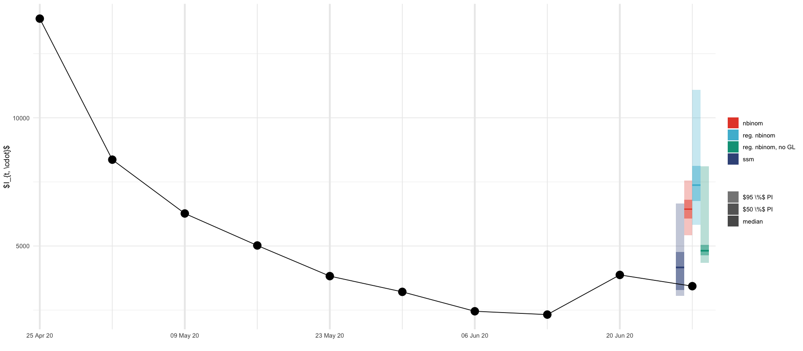
full_truth %>%
filter(date <= prediction_date, date >= prediction_date - 21)| date | cases |
|---|---|
| <date> | <dbl> |
| 2020-06-06 | 2454 |
| 2020-06-13 | 2324 |
| 2020-06-20 | 3872 |
| 2020-06-27 | 3433 |
tables/regional_showcase_theta.texparameters <- read_csv(here("data/results/4_local_outbreak_model/estimated_parameters.csv"), col_names = c("parameter", "value")) %>%
pivot_wider(names_from = parameter, values_from = value) %>%
rename(
"$\\alpha$" = alpha,
"$\\sigma_{\\overline{\\log \\rho}}$" = sigma_r,
"$\\sigma_{S}$" = "sigma spatial",
"$\\bar{q}$" = q,
"$C$" = C,
"$\\phi$" = r
)# %>%
#pivot_longer(everything(), names_to="parameter", values_to="estimate")
parameters %>%
kable(format = "latex", digits=2, booktabs=T, escape=F) %>%
cat(., file=here("tables/regional_showcase_theta.tex"))log_rhos <- showcase_results %>%
filter(str_starts(variable, "log_rho_")) %>%
# extract both indices from variable names like log_rho_2_1
mutate(c = as.numeric(str_extract(variable, "log_rho_(\\d+)_(\\d+)", group=1))) %>%
mutate(t = as.numeric(str_extract(variable, "log_rho_(\\d+)_(\\d+)", group=2)))rho_adjusted <- read_csv(here("data/results/4_local_outbreak_model/showcase_rho_observed.csv"))tikz/regional_showcase_rho.texapproaches <- factor(c("ssm", "empirical", "weighted mean"), levels = c("ssm", "weighted mean", "empirical"))
ssm_app <- approaches[1]
empirical_app <- approaches[2]
adjusted_app <- approaches[3]
emp_rho_plt <- full_truth_county %>%
filter(date >= ymd('2020-04-18'), date<= prediction_date - 7) %>%
group_by(ags) %>%
mutate(rho = cases / lag(pmax(cases, 1))) %>%
filter(!is.na(rho))
p_county <- showcase_results %>%
filter(variable == "log_rho") %>%
ggplot(aes(date, exp(`50.0 %`), color=ssm_app)) +
geom_boxplot(aes(date-1, rho, color=empirical_app, group = date), data = emp_rho_plt, width=2) +
geom_boxplot(aes(date+1, group = date, color=ssm_app), data = log_rhos, width=2) +
ylim(0,4) +
scale_x_date(
breaks = function(x) seq(ceiling_date(x[1], "week", week_start = 6), floor_date(x[2], "week", week_start = 6), by = "2 week"),
date_labels = "%d %b %y",
expand = expansion(mult = c(0.01, 0.01)),
limits = c(ymd('2020-04-20'), ymd('2020-06-24'))
) +
labs(color="approach", x="", y="$\\rho_{t,r}$") +
scale_color_manual(values=c("empirical"=pal_npg("nrc")(10)[2], "ssm"=pal_npg("nrc")(10)[1])) +
ggtitle("regional level")
p_country <- showcase_results %>%
ggplot(aes(date)) +
geom_line(aes(y=`50.0 %`, color="adjusted"), data = rho_adjusted) +
geom_ribbon(aes(ymin=`2.5 %`, ymax=`97.5 %`, fill="adjusted"), alpha = .05, data = rho_adjusted) +
geom_line(
aes(y=`50.0 %`, color="mean"),
data = showcase_results %>% filter(variable == "mean_rho")
) +
geom_ribbon(aes(ymin=`2.5 %`, ymax=`97.5 %`, fill="mean"), alpha = .05, data = showcase_results %>% filter(variable == "mean_rho")) +
geom_line(
data = full_truth %>% mutate(rho = cases / lag(cases)),
aes(date, rho, color="empirical")
)+
scale_x_date(
breaks = function(x) seq(ceiling_date(x[1], "week", week_start = 6), floor_date(x[2], "week", week_start = 6), by = "2 week"),
date_labels = "%d %b %y",
expand = expansion(mult = c(0.01, 0.01)),
limits = c(ymd('2020-04-20'), ymd('2020-06-24'))
) +
labs(color="approach", x="", y="$\\rho_{t}$", fill="") +
scale_color_manual(values=c("adjusted"=pal_npg("nrc")(10)[1], "mean"=pal_npg("nrc")(10)[3], "empirical"=pal_npg("nrc")(10)[2])) +
scale_fill_manual(values=c("adjusted"=pal_npg("nrc")(10)[1], "mean"=pal_npg("nrc")(10)[3], "empirical"=pal_npg("nrc")(10)[2])) +
ylim(NA, 2) +
guides(fill = "none") +
ggtitle("country level")
p_county / p_country
ggsave_tikz(here("tikz/regional_showcase_rho.tex"), width=16/1.5, height=12/1.5)Warning message: "Removed 97 rows containing non-finite outside the scale range (`stat_boxplot()`)." Warning message: "Removed 400 rows containing missing values or values outside the scale range (`stat_boxplot()`)." Warning message: "Removed 38 rows containing non-finite outside the scale range (`stat_boxplot()`)." Warning message: "Removed 1 row containing missing values or values outside the scale range (`geom_line()`)." Warning message: "Removed 1 row containing missing values or values outside the scale range (`geom_line()`)." Warning message: "Removed 166 rows containing missing values or values outside the scale range (`geom_line()`)." Warning message: "Removed 97 rows containing non-finite outside the scale range (`stat_boxplot()`)." Warning message: "Removed 400 rows containing missing values or values outside the scale range (`stat_boxplot()`)." Warning message: "Removed 38 rows containing non-finite outside the scale range (`stat_boxplot()`)." Warning message: "Removed 1 row containing missing values or values outside the scale range (`geom_line()`)." Warning message: "Removed 1 row containing missing values or values outside the scale range (`geom_line()`)." Warning message: "Removed 166 rows containing missing values or values outside the scale range (`geom_line()`)."
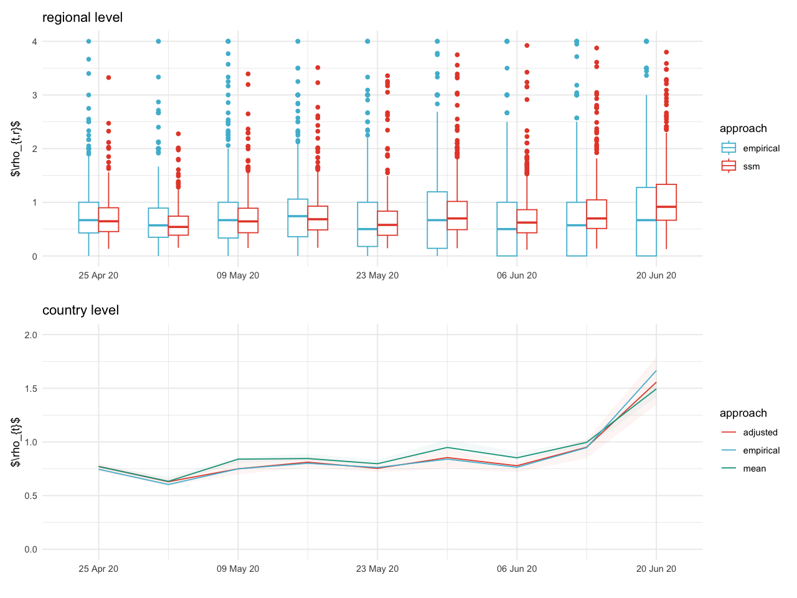
ags_state_dict <- read_csv(here("data/processed/ags_state_dict.csv"))
index_to_state <- ags_county_dict %>%
mutate(i = 1:400) %>%
mutate(state_ags = str_sub(ags, end=2)) %>%
rename(county_name = name) %>%
inner_join(ags_state_dict, by=c("state_ags"="ags")) %>%
select(i, state_ags, county_name, state_name = name)P <- read_delim(here("data/results/4_local_outbreak_model/showcase_P_matrix.csv"), delim = " ", col_names = 1:400) %>%
as.matrix()
colnames(P) <- NULL
P_long_states <- melt(P) %>%
rename(i = Var1, j = Var2) %>%
inner_join(select(index_to_state, i, state_name_i = state_name), by=c("i")) %>%
inner_join(select(index_to_state, j=i, state_name_j = state_name), by=c("j"))Q <- read_delim(here("data/results/4_local_outbreak_model/Q.csv"), delim = " ", col_names = 1:400) %>%
as.matrix()
colnames(Q) <- NULL
Q_long_states <- melt(Q) %>%
rename(i = Var1, j = Var2) %>%
inner_join(select(index_to_state, i, state_name_i = state_name), by=c("i")) %>%
inner_join(select(index_to_state, j=i, state_name_j = state_name), by=c("j"))# solve utf-8 encoding issues
Sys.setlocale("LC_ALL", "UTF-8")county_shorthand <- function(county_name) {
ifelse(
str_detect(county_name, "Stadt"),
paste0(str_sub(county_name, 1, 3), ". Stadt"),
paste0(str_sub(county_name, 1, 3), ".")
)
}nrw_ags <- ags_state_dict %>%
filter(name == "Nordrhein-Westfalen") %>%
pull(ags)
guetersloh_neighbor_ags <- c(
"05754", # Gütersloh
"03459", # Osnabrück
"03404", # Osnabrück Stadt
"05566", # Steinfurt
"05515", # Münster
"05558", # Coesfeld
"05758", # Herford
"05711", # Bielefeld
"05766", # Lippe
"05774", # Paderborn
"05974", # Soest
"05570" # Warendorf
)
counties <- bkg_admin(level = "krs", scale="1000") %>%
filter(ags %in% guetersloh_neighbor_ags)
counties_to_plot <- ags_county_dict %>%
mutate(i = 1:400) %>%
#filter(str_starts(ags, nrw_ags)) %>%
filter(ags %in% guetersloh_neighbor_ags) %>%
rename(county_name = name) %>%
select(i, county_name)
P_to_plot <- melt(P) %>%
rename(i = Var1, j = Var2) %>%
inner_join(select(counties_to_plot, i, county_name_i = county_name), by=c("i")) %>%
inner_join(select(counties_to_plot, j=i, county_name_j = county_name), by=c("j"))
p_rr <- P_to_plot %>%
filter(i == j) %>%
mutate(county_name_i_short = county_shorthand(county_name_i))
plt_saxony <- P_to_plot %>%
#mutate(value = ifelse(value < 0.01, NA, value)) %>%
mutate(value = ifelse(i==j, NA, value)) %>%
mutate(county_name_i_short = county_shorthand(county_name_i)) %>%
ggplot() +
geom_tile(aes(county_name_i_short,county_name_j, fill=value)) +
scale_fill_gradient(
low = "white",
high = pal_npg("nrc")(10)[5],
na.value = "white",
limits = c(0, 0.16)
) +
geom_tile(aes(county_name_i_short,county_name_j), fill=pal_npg("nrc")(2)[2], data=p_rr) +
scale_y_discrete(limits=rev) +
theme_minimal() +
labs(fill= "$p_{r,r'}$", x="r", y="r'") +
theme(
axis.text.x = element_text(angle=90, hjust=1)
) +
coord_fixed()
plt_marg_right <- melt(P) %>%
rename(i = Var1, j = Var2) %>%
inner_join(select(counties_to_plot, j=i, county_name_j = county_name), by=c("j")) %>%
group_by(county_name_j) %>%
summarize(value = sum(value)) %>%
ggplot(aes(county_name_j, value)) +
geom_bar(stat="identity", aes(fill = "$\\sum_{r\\neq r'} p_{r,r'}$")) +
geom_bar(data=p_rr, aes(county_name_j, value, fill="$p_{r',r'}$"), stat="identity")+
theme_minimal() +
scale_x_discrete(limits=rev)+
scale_y_continuous(breaks = seq(0,1.5, .2)) +
coord_flip() +
labs(x="", y="$\\sum\\limits_{r=1}^R p_{r,r'}$", fill = "")+
theme(
axis.text.y = element_blank(),
axis.ticks.y = element_blank(),
axis.title.y = element_blank()
) +
scale_fill_npg()
plt_saxony | plt_marg_right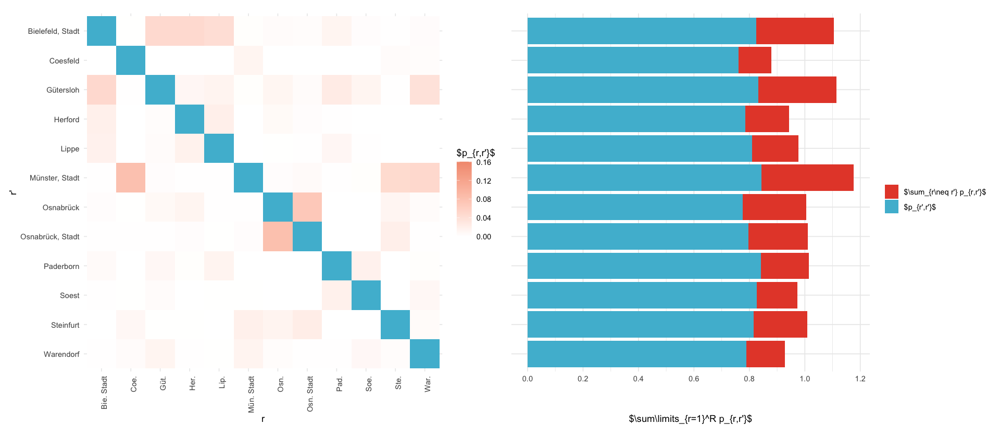
Q_map <- Q_long_states %>%
inner_join(ags_county_dict, by=c("i"="c")) %>%
inner_join(ags_county_dict, by=c("j"="c"), suffix=c("_i", "_j")) %>%
filter(ags_i == "05754") %>%
filter(ags_j %in% guetersloh_neighbor_ags) %>%
select(ags = ags_j, q_ij=value)P_map <- P_long_states %>%
inner_join(ags_county_dict, by=c("i"="c")) %>%
inner_join(ags_county_dict, by=c("j"="c"), suffix=c("_i", "_j")) %>%
filter(ags_i == "05754") %>%
filter(ags_j %in% guetersloh_neighbor_ags) %>%
select(ags = ags_j, p_ij=value)
map_date <- ymd("2020-06-20")
# Calculate centroids for label positioning
county_centroids <- counties %>%
st_centroid() %>%
st_coordinates() %>%
as_tibble() %>%
bind_cols(counties %>% select(ags))
# Join centroids with rho_map for labels
label_data <- county_centroids %>%
inner_join(ags_county_dict, by = "ags") %>%
inner_join(P_map)
p_map_GL <- counties %>%
left_join(P_map, by = "ags") %>%
ggplot() +
geom_sf(aes(fill=ifelse(ags == "05754", NA, p_ij * 100))) +
geom_text(aes(x = X, y = Y, label = paste0(name, "\n", round(p_ij * 100, 2))), data = label_data, size = 2) +
scale_fill_gradient(low = 'white', high = pal_npg("nrc")(10)[5], na.value= pal_npg("nrc")(10)[2], limits=c(0, 13)) +
labs(fill="$p / q [\\%]$") +
theme_void() +
ggtitle("$p_{GL,r}$")
p_map_GLWarning message: “st_centroid assumes attributes are constant over geometries” Joining with `by = join_by(ags)`
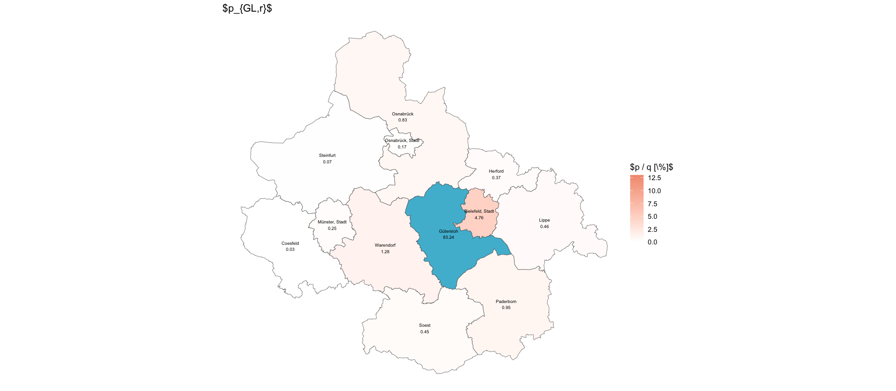
# Join centroids with rho_map for labels
label_data_Q <- county_centroids %>%
inner_join(ags_county_dict, by = "ags") %>%
inner_join(Q_map)
p_map_GL_Q <- counties %>%
left_join(Q_map, by = "ags") %>%
ggplot() +
geom_sf(aes(fill=ifelse(ags == "05754", NA, q_ij * 100))) +
geom_text(aes(x = X, y = Y, label = paste0(name, "\n", round(q_ij * 100, 2))), data = label_data_Q, size = 2) +
scale_fill_gradient(low = 'white', high = pal_npg("nrc")(10)[5], na.value= pal_npg("nrc")(10)[2], limits=c(0, 13)) +
labs(fill="$p / q [\\%]$") +
theme_void() +
ggtitle("$q_{GL,r}$")Joining with `by = join_by(ags)`
tikz/P_map_GL.tex(p_map_GL | p_map_GL_Q ) + plot_layout(guides = "collect") & theme(legend.position = "right")
caption <- r"(On the left hand side we show a map of neighboring counties $r$ to Gütersloh county, with associated $p_{\text{GL},r}$ (in $\%$) indicating how our model distributes secondary cases infected from primary cases in Gütersloh to neighboring counties.
The right-hand side shows the corresponding $q_{\text{GL}, r}$ values. As $p_{\text{GL}, \text{GL}}$ and $q_{\text{GL}, \text{GL}}$ are much larger than the other values, we apply the red colorscheme only to the other counties. Notice that the seven direct neighboring counties are also the counties with the highest values in both figures.)"
ggsave_tikz_full(here("tikz/P_map_GL.tex"), width=8, height=4, caption=caption)On the left hand side we show a map of neighboring counties \(r\) to Gütersloh county, with associated \(p_{\text{GL},r}\) (in \(\%\)) indicating how our model distributes secondary cases infected from primary cases in Gütersloh to neighboring counties. The right-hand side shows the corresponding \(q_{\text{GL}, r}\) values. As \(p_{\text{GL}, \text{GL}}\) and \(q_{\text{GL}, \text{GL}}\) are much larger than the other values, we apply the red colorscheme only to the other counties. Notice that the seven direct neighboring counties are also the counties with the highest values in both figures.
Warning message in (function (texString, cex = 1, face = 1, engine = getOption("tikzDefaultEngine"), :
“Attempting to calculate the width of a Unicode stringusing the pdftex engine. This may fail! See the Unicodesection of ?tikzDevice for more information.”
Warning message in (function (texString, cex = 1, face = 1, engine = getOption("tikzDefaultEngine"), :
“Attempting to calculate the width of a Unicode stringusing the pdftex engine. This may fail! See the Unicodesection of ?tikzDevice for more information.”
Warning message in (function (texString, cex = 1, face = 1, engine = getOption("tikzDefaultEngine"), :
“Attempting to calculate the width of a Unicode stringusing the pdftex engine. This may fail! See the Unicodesection of ?tikzDevice for more information.”
Warning message in (function (texString, cex = 1, face = 1, engine = getOption("tikzDefaultEngine"), :
“Attempting to calculate the width of a Unicode stringusing the pdftex engine. This may fail! See the Unicodesection of ?tikzDevice for more information.”
Warning message in (function (texString, cex = 1, face = 1, engine = getOption("tikzDefaultEngine"), :
“Attempting to calculate the width of a Unicode stringusing the pdftex engine. This may fail! See the Unicodesection of ?tikzDevice for more information.”
Warning message in (function (texString, cex = 1, face = 1, engine = getOption("tikzDefaultEngine"), :
“Attempting to calculate the width of a Unicode stringusing the pdftex engine. This may fail! See the Unicodesection of ?tikzDevice for more information.”
Warning message in (function (texString, cex = 1, face = 1, engine = getOption("tikzDefaultEngine"), :
“Attempting to calculate the width of a Unicode stringusing the pdftex engine. This may fail! See the Unicodesection of ?tikzDevice for more information.”
Warning message in (function (texString, cex = 1, face = 1, engine = getOption("tikzDefaultEngine"), :
“Attempting to calculate the width of a Unicode stringusing the pdftex engine. This may fail! See the Unicodesection of ?tikzDevice for more information.”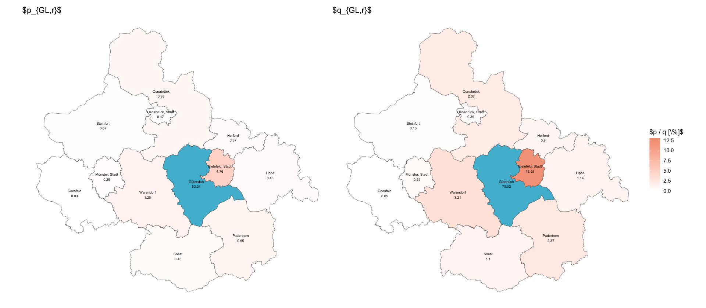
tikz/P_matrix_GL_neighbors.tex((plt_saxony | plt_marg_right)) + plot_layout(guides = "collect", axes = "collect_y")
ggsave_tikz(here('tikz/P_matrix_GL_neighbors.tex'), width=16/1.5, height=9/1.5)Warning message in (function (texString, cex = 1, face = 1, engine = getOption("tikzDefaultEngine"), :
“Attempting to calculate the width of a Unicode stringusing the pdftex engine. This may fail! See the Unicodesection of ?tikzDevice for more information.”
Warning message in (function (texString, cex = 1, face = 1, engine = getOption("tikzDefaultEngine"), :
“Attempting to calculate the width of a Unicode stringusing the pdftex engine. This may fail! See the Unicodesection of ?tikzDevice for more information.”
Warning message in (function (texString, cex = 1, face = 1, engine = getOption("tikzDefaultEngine"), :
“Attempting to calculate the width of a Unicode stringusing the pdftex engine. This may fail! See the Unicodesection of ?tikzDevice for more information.”
Warning message in (function (texString, cex = 1, face = 1, engine = getOption("tikzDefaultEngine"), :
“Attempting to calculate the width of a Unicode stringusing the pdftex engine. This may fail! See the Unicodesection of ?tikzDevice for more information.”
Warning message in (function (texString, cex = 1, face = 1, engine = getOption("tikzDefaultEngine"), :
“Attempting to calculate the width of a Unicode stringusing the pdftex engine. This may fail! See the Unicodesection of ?tikzDevice for more information.”
Warning message in (function (texString, cex = 1, face = 1, engine = getOption("tikzDefaultEngine"), :
“Attempting to calculate the width of a Unicode stringusing the pdftex engine. This may fail! See the Unicodesection of ?tikzDevice for more information.”
Warning message in (function (texString, cex = 1, face = 1, engine = getOption("tikzDefaultEngine"), :
“Attempting to calculate the width of a Unicode stringusing the pdftex engine. This may fail! See the Unicodesection of ?tikzDevice for more information.”
Warning message in (function (texString, cex = 1, face = 1, engine = getOption("tikzDefaultEngine"), :
“Attempting to calculate the width of a Unicode stringusing the pdftex engine. This may fail! See the Unicodesection of ?tikzDevice for more information.”
Warning message in (function (texString, cex = 1, face = 1, engine = getOption("tikzDefaultEngine"), :
“Attempting to calculate the width of a Unicode stringusing the pdftex engine. This may fail! See the Unicodesection of ?tikzDevice for more information.”
Warning message in (function (texString, cex = 1, face = 1, engine = getOption("tikzDefaultEngine"), :
“Attempting to calculate the width of a Unicode stringusing the pdftex engine. This may fail! See the Unicodesection of ?tikzDevice for more information.”
Warning message in (function (texString, cex = 1, face = 1, engine = getOption("tikzDefaultEngine"), :
“Attempting to calculate the width of a Unicode stringusing the pdftex engine. This may fail! See the Unicodesection of ?tikzDevice for more information.”
Warning message in (function (texString, cex = 1, face = 1, engine = getOption("tikzDefaultEngine"), :
“Attempting to calculate the width of a Unicode stringusing the pdftex engine. This may fail! See the Unicodesection of ?tikzDevice for more information.”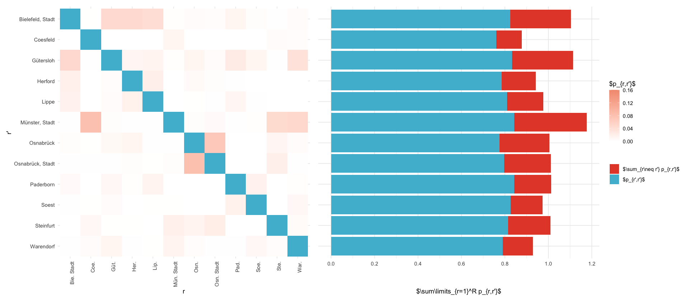
emp_rho_c %>%
filter(1:n() == 99)
full_truth_county %>%
filter(date == prediction_date - 7) %>%
filter(1:n() == 99)| ags | growth_rate |
|---|---|
| <chr> | <dbl> |
| 05754 | 11.72603 |
| date | ags | cases | deaths |
|---|---|---|---|
| <date> | <chr> | <dbl> | <dbl> |
| 2020-06-20 | 05754 | 856 | 0 |
forecasts_directory <- here("data/results/4_local_outbreak_model")
df_forecasts <- list.files(forecasts_directory, pattern="forecasts_.*.csv", full.names = TRUE) %>%
# infer the forecast date from the filename - have to add 10 weeks to the date in the filename as it is the initial date
lapply(function(file) read_csv(file) %>% mutate(date = ymd(str_extract(string = file, pattern = "\\d{4}-\\d{2}-\\d{2}")) + days(10 * 7))) %>%
bind_rows(.)df_baseline <- read_csv(here("data/processed/KIT_FCH_KIT-baseline.csv")) %>%
filter(date <= max(df_forecasts$date), date >= min(df_forecasts$date))
df_itww <- read_csv(here("data/processed/KIT_FCH_ITWW-county_repro.csv")) %>%
filter(date <= max(df_forecasts$date), date >= min(df_forecasts$date))
df_ensemble_kit <- read_csv(here("data/processed/KIT_FCH_KITCOVIDhub-median_ensemble.csv")) %>%
filter(date <= max(df_forecasts$date), date >= min(df_forecasts$date))
df_ensemble_ecdc <- read_csv(here("data/processed/ECDC_FCH_EuroCOVIDhub-ensemble.csv")) %>%
filter(date <= max(df_forecasts$date), date >= min(df_forecasts$date))last_date_KIT <- max(df_ensemble_kit$date)
df_ensemble <- df_ensemble_kit %>%
rbind(filter(df_ensemble_ecdc, date > last_date_KIT))all_df <- rbind(
df_forecasts %>% filter(variable == 'y_total') %>% select(df_baseline %>% names) %>% mutate(model='ssm'),
df_baseline %>% mutate(model='baseline'),
df_itww %>% mutate(model='itww'),
df_ensemble %>% mutate(model='ensemble')
) %>%
filter(date <= ymd('2021-09-15'), date >= ymd('2020-10-12'))forecast_dates <- all_df$date %>% uniquetikz/regional_forecasts_comparison.texlast_date_KIT# larger figures
options(
repr.plot.width=16/1.5,
repr.plot.height=12/1.5
)
kit_ecdc_switch <- tibble(
model="ensemble",
last_date=last_date_KIT + 3.5,
text="switch from KIT to ECDC ensemble"
)
ggplot(all_df, aes(date)) +
geom_line(aes(y=`50.0 %`, color=model, alpha="median")) +
geom_line(aes(x = date, y = cases, linetype = "RKI"), data = filter(full_truth, date <= max(all_df$date), date >= min(all_df$date))) +
geom_ribbon(aes(ymin = `25.0 %`, ymax = `75.0 %`, fill = model, alpha="$50\\%$")) +
geom_ribbon(aes(ymin = `2.5 %`, ymax = `97.5 %`, fill = model, alpha="$95\\%$")) +
geom_vline(data=kit_ecdc_switch, aes(xintercept=last_date), linetype=1) +
geom_text(data=kit_ecdc_switch, aes(x = last_date + 48.5, y=3e5, label=text)) +
labs(x = "", y = "", linetype = NULL, fill = NULL, alpha="") +
guides(fill="none", color="none") +
scale_x_four_weekly(week_start = 6) +
scale_linetype_manual(values=c("RKI" = 2))+
scale_alpha_manual(values = c("median" = 1, "$50\\%$" = 0.3, "$95\\%$" = 0.1)) +
facet_wrap(~model, ncol = 1) +
scale_y_log10()
ggsave_tikz(
here("tikz/regional_forecasts_comparison.tex"),
width=16/1.5, height=12/1.5
)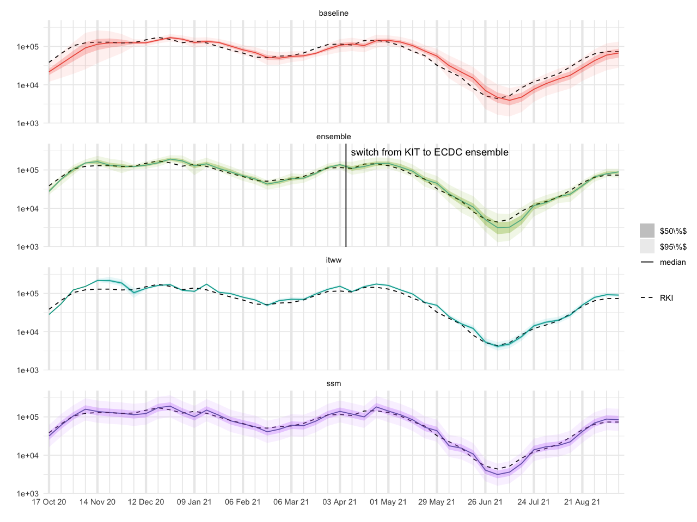
tables/regional_forecasts_combined_performance.texbinom_test_ci <- function(k, n, digits=2) {
ci <- binom.test(k, n)$conf.int
paste0(format(k/n * 100, digits=digits), "\\% (", format(ci[1] * 100, digits=digits), "\\% - ", format(ci[2] * 100, digits=digits), "\\%)")
}quantiles <- c(0.01, 0.025, 0.05, 0.10, 0.15, 0.2, 0.25, 0.3, 0.35, 0.45, 0.5, 0.55, 0.6, 0.65, 0.70, 0.75, 0.80, 0.85, 0.90, 0.95, 0.975, 0.99)
compute_relative_performance <- function(truth) {
truth %>%
inner_join(all_df, by="date") %>%
rename(truth=cases) %>%
rowwise() %>%
mutate(
WIS_decompose = list(WIS_decompose(
prob=quantiles,
quant=c(`1.0 %`, `2.5 %`, `5.0 %`, `10.0 %`, `15.0 %`, `20.0 %`, `25.0 %`, `30.0 %`, `35.0 %`, `40.0 %`, `45.0 %`, `50.0 %`, `55.0 %`, `60.0 %`, `65.0 %`, `70.0 %`, `75.0 %`, `80.0 %`, `85.0 %`, `90.0 %`, `95.0 %`, `97.5 %`, `99.0 %`),
actual= truth
))
) %>%
unnest_wider(WIS_decompose) %>%
group_by(model) %>%
summarize(
mae = mean(abs(`50.0 %` - truth), na.rm = TRUE),
WIS = mean(wis),
sharpness = mean(sharpness),
underprediction = mean(underprediction),
overprediction = mean(overprediction),
mean_error = mean(mean_error),
length_95 = mean(`97.5 %` - `2.5 %`, na.rm = TRUE),
length_50 = mean(`75.0 %` - `25.0 %`, na.rm = TRUE),
coverage_50 = mean(`25.0 %` <= truth & truth <= `75.0 %`, na.rm = TRUE),
coverage_95 = mean(`2.5 %` <= truth & truth <= `97.5 %`, na.rm = TRUE),
)
}
df_table_performance <- compute_relative_performance(full_truth) %>%
mutate(coverage_50 = coverage_50 * 100) %>%
mutate(coverage_95 = coverage_95 * 100) %>%
rename(
`MAE` = mae,
`WIS` = WIS,
`sharpness` = sharpness,
`underprediction` = underprediction,
`overprediction` = overprediction,
`rescaled MAE` = mean_error,
`coverage 50% PI [%]` = coverage_50,
`coverage 95% PI [%]` = coverage_95,
) %>%
select(-length_95, -length_50) %>%
t() %>% # Transpose
as.data.frame() %>% # Convert to data frame
rownames_to_column(var = "metric") %>%
setNames(c("metric", .[1,2:5])) %>%
slice(-1)df_table_relative_performance <- df_table_performance %>%
mutate(across(baseline:ssm, as.numeric)) %>%
# relative to baseline, first column
mutate(across(ensemble:ssm, ~ .x / baseline)) %>%
select(-baseline) %>%
filter(metric %in% c('MAE', 'WIS'))# function that formats numbers for LaTeX
format_latex <- function(x) {
x <- round(as.numeric(x), 2)
x <- format(x, nsmall = 2, big.mark = ",", scientific = FALSE)
return(x)
}library(kableExtra)
# Add baseline column to relative metrics (filled with 1.000)
df_table_relative_performance$baseline <- 1.000
# Reorder columns to match the absolute table structure
df_table_relative_performance <- df_table_relative_performance[, c("metric", "baseline", "ensemble", "itww", "ssm")]
# Combine the datasets
combined_table <- rbind(df_table_performance, df_table_relative_performance)
# Create the combined table with section headers
combined_table %>%
# round to two digits
mutate(across(baseline:ssm, format_latex)) %>%
# add thousands separator in latex
kable(format="latex", digits=1, booktabs=T, escape=T, align = c("l", "r", "r", "r", "r")) %>%
#pack_rows("absolute performance", 1, nrow(df_table_performance) - 2) %>%
pack_rows("WIS components", nrow(df_table_performance) - 5, nrow(df_table_performance)) %>%
pack_rows("coverage", nrow(df_table_performance) - 1, nrow(df_table_performance)) %>%
pack_rows("relative to baseline", nrow(df_table_performance) + 1, nrow(combined_table)) %>%
cat(., file=here("tables/regional_forecasts_combined_metrics.tex"))combined_table| metric | baseline | ensemble | itww | ssm |
|---|---|---|---|---|
| <chr> | <chr> | <chr> | <chr> | <chr> |
| MAE | 14654.00 | 9750.84 | 16531.37 | 10149.94 |
| WIS | 8707.215 | 5595.531 | 12708.904 | 6795.430 |
| sharpness | 3023.821 | 2459.093 | 890.011 | 5074.880 |
| underprediction | 3239.0455 | 776.0869 | 1293.9369 | 832.6676 |
| overprediction | 1753.8314 | 1934.3247 | 9789.5615 | 448.6346 |
| rescaled MAE | 690.5170 | 426.0267 | 735.3950 | 439.2476 |
| coverage 50% PI [%] | 37.50 | 43.75 | 18.75 | 75.00 |
| coverage 95% PI [%] | 91.66667 | 91.66667 | 41.66667 | 100.00000 |
| MAE | 1 | 0.665404667667531 | 1.1281131431691 | 0.692639552340658 |
| WIS | 1 | 0.642631541773116 | 1.45958311584129 | 0.780436683830593 |
forecasts_directory <- here("data/results/4_local_outbreak_model")
df_regional_forecasts <- list.files(forecasts_directory, pattern="regional_forecasts_.*.csv", full.names = TRUE) %>%
# infer the forecast date from the filename - have to add 10 weeks to the date in the filename as it is the initial date
lapply(function(file) read_csv(file) %>% mutate(date = ymd(str_extract(string = file, pattern = "\\d{4}-\\d{2}-\\d{2}")) + days(10 * 7))) %>%
bind_rows(.)calculate_regional_wis <- function(df) {
state_predictions <- full_truth_county %>%
group_by(date, ags_state = str_sub(ags, end=2)) %>%
summarize(cases = sum(cases)) %>%
mutate(ags_state = as.integer(ags_state)) %>%
inner_join(
df,
by=c("ags_state"="c", "date" = "date")
)
qs <- c(0.01, 0.025, 0.05, 0.10, 0.15, 0.2, 0.25, 0.3, 0.35, 0.45, 0.5, 0.55, 0.6, 0.65, 0.70, 0.75, 0.80, 0.85, 0.90, 0.95, 0.975, 0.99)
state_predictions_wis <- state_predictions %>%
rowwise() %>%
mutate(
wis = list(WIS_decompose(
prob = qs,
quant = c(`1.0 %`, `2.5 %`, `5.0 %`, `10.0 %`, `15.0 %`, `20.0 %`, `25.0 %`, `30.0 %`, `35.0 %`, `40.0 %`, `45.0 %`, `50.0 %`, `55.0 %`, `60.0 %`, `65.0 %`, `70.0 %`, `75.0 %`, `80.0 %`, `85.0 %`, `90.0 %`, `95.0 %`, `97.5 %`, `99.0 %`),
actual = cases
)),
coverage_50 = as.numeric(`25.0 %` <= cases & cases <= `75.0 %`),
coverage_95 = as.numeric(`2.5 %` <= cases & cases <= `97.5 %`)
) %>%
unnest_wider(wis) %>%
group_by(ags_state) %>%
summarize(
mae = mean(abs(`50.0 %` - cases), na.rm = TRUE),
WIS = mean(wis),
sharpness = mean(sharpness),
underprediction = mean(underprediction),
overprediction = mean(overprediction),
mean_error = mean(mean_error),
coverage_50 = mean(coverage_50, na.rm = TRUE) * 100,
coverage_95 = mean(coverage_95, na.rm = TRUE) * 100
)
state_predictions_wis
}read_regional_FCH <- function(model_name) {
read_csv(here(str_glue("data/processed/KIT_regional_FCH_{model_name}.csv"))) %>%
rename(date = target_end_date, c=ags_state) %>%
filter(date <= max(df_regional_forecasts$date), date >= min(df_regional_forecasts$date)) %>%
mutate(model = model_name)
}
all_predictions <- rbind(
read_regional_FCH('KIT-baseline'),
read_regional_FCH('KITCOVIDhub-median_ensemble'),
read_regional_FCH('ITWW-county_repro')
) %>%
rbind(
select(df_regional_forecasts %>% filter(str_starts(variable, "y_state")), any_of(names(.))) %>%
mutate(model = 'ssm')
)all_predictions %>%
filter(model == 'KIT-baseline') %>%
filter(date >= ymd('2021-01-16'), date <= ymd('2021-12-11')) %>%
distinct(date) %>%
nrow()make_regional_wis_df <- function(df, model_name) {
df %>%
calculate_regional_wis() %>%
mutate(model = model_name) %>%
select(model, everything())
}
tbl_regional_perf <- rbind(
all_predictions %>%
filter(model == 'KIT-baseline') %>%
filter(date >= ymd('2021-01-16'), date <= ymd('2021-12-11')) %>%
make_regional_wis_df(model_name='KIT-baseline'),
all_predictions %>%
filter(model == 'KITCOVIDhub-median_ensemble') %>%
filter(date >= ymd('2021-01-16'), date <= ymd('2021-12-11')) %>%
make_regional_wis_df(model_name='KITCOVIDhub-median_ensemble'),
all_predictions %>%
filter(model == 'ITWW-county_repro') %>%
filter(date >= ymd('2021-01-16'), date <= ymd('2021-12-11')) %>%
make_regional_wis_df(model_name='ITWW-county_repro'),
all_predictions %>%
filter(date >= ymd('2021-01-16'), date <= ymd('2021-12-11')) %>%
filter(model == 'ssm') %>%
make_regional_wis_df(model_name="ssm")
) %>%
pivot_longer(-c(model, ags_state)) %>%
group_by(., model, name) %>%
summarize(value=mean(value)) %>%
pivot_wider(names_from = 'model') %>%
select(name, baseline=`KIT-baseline`, ensemble=`KITCOVIDhub-median_ensemble`, itww=`ITWW-county_repro`, ssm) %>%
mutate(name = factor(name, c("mae", "WIS", "sharpness", "underprediction", "overprediction", "mean_error", "coverage_50", "coverage_95"))) %>%
arrange(name) %>%
mutate(name = fct_recode(name, "MAE" = "mae", "WIS" = "WIS", "sharpness" = "sharpness", "underprediction" = "underprediction", "overprediction" = "overprediction", "rescaled MAE" = "mean_error", "coverage 50% PI [%]" = "coverage_50", "coverage 95% PI [%]" = "coverage_95"))df_table_regional_relative_performance <- tbl_regional_perf %>%
mutate(across(baseline:ssm, as.numeric)) %>%
# relative to baseline, first column
mutate(across(ensemble:ssm, ~ .x / baseline)) %>%
select(-baseline) %>%
filter(name %in% c('MAE', 'WIS'))
df_table_regional_relative_performance$baseline <- 1.000
df_table_regional_relative_performance <- df_table_regional_relative_performance[, c("name", "baseline", "ensemble", "itww", "ssm")]
tbl_regional_combined <- rbind(
tbl_regional_perf,
df_table_regional_relative_performance
) %>%
select(metric=name, baseline, ensemble, itww, ssm)
tbl_regional_combined %>%
mutate(across(baseline:ssm, format_latex)) %>%
# add thousands separator in latex
kable(format="latex", digits=1, booktabs=T, escape=T, align = c("l", "r", "r", "r", "r")) %>%
#pack_rows("absolute performance", 1, nrow(df_table_performance) - 2) %>%
pack_rows("WIS components", nrow(df_table_performance) - 5, nrow(df_table_performance)) %>%
pack_rows("coverage", nrow(df_table_performance) - 1, nrow(df_table_performance)) %>%
pack_rows("relative to baseline", nrow(df_table_performance) + 1, nrow(combined_table)) %>%
cat(., file=here("tables/subnational_regional_forecasts_combined_metrics.tex"))all_predictions %>%
group_by(model) %>%
summarize(range(date))Warning message: “Returning more (or less) than 1 row per `summarise()` group was deprecated in dplyr 1.1.0. ℹ Please use `reframe()` instead. ℹ When switching from `summarise()` to `reframe()`, remember that `reframe()` always returns an ungrouped data frame and adjust accordingly.”
| model | range(date) |
|---|---|
| <chr> | <date> |
| ITWW-county_repro | 2020-10-17 |
| ITWW-county_repro | 2022-01-22 |
| KIT-baseline | 2020-10-17 |
| KIT-baseline | 2022-01-22 |
| KITCOVIDhub-median_ensemble | 2021-01-16 |
| KITCOVIDhub-median_ensemble | 2021-12-11 |
| ssm | 2020-10-17 |
| ssm | 2022-01-22 |
df_regional_forecasts %>%
filter(str_starts(variable, "y_state")) %>%
calculate_regional_wis() %>%
mutate(model = "ssm") %>%
select(model, everything())| model | ags_state | mae | WIS | sharpness | underprediction | overprediction | mean_error | coverage_50 | coverage_95 |
|---|---|---|---|---|---|---|---|---|---|
| <chr> | <dbl> | <dbl> | <dbl> | <dbl> | <dbl> | <dbl> | <dbl> | <dbl> | <dbl> |
| ssm | 1 | 549.2014 | 392.8305 | 169.39039 | 177.20720 | 21.873470 | 24.35946 | 68.65672 | 97.01493 |
| ssm | 2 | 669.4434 | 403.9457 | 218.15932 | 144.37970 | 9.600947 | 31.80569 | 79.10448 | 100.00000 |
| ssm | 3 | 1155.7024 | 771.1414 | 510.87999 | 169.08346 | 40.503662 | 50.67424 | 76.11940 | 100.00000 |
| ssm | 4 | 271.6475 | 174.9290 | 81.91849 | 64.45905 | 17.144022 | 11.40742 | 71.64179 | 97.01493 |
| ssm | 5 | 3907.3469 | 2448.2634 | 1507.56856 | 638.55975 | 124.198233 | 177.93682 | 68.65672 | 100.00000 |
| ssm | 6 | 1257.3837 | 834.3116 | 559.48429 | 176.71503 | 41.571422 | 56.54087 | 82.08955 | 100.00000 |
| ssm | 7 | 754.7953 | 481.5908 | 313.08078 | 104.68264 | 31.712455 | 32.11494 | 76.11940 | 98.50746 |
| ssm | 8 | 2346.5177 | 1511.7695 | 1088.73284 | 261.69242 | 58.809472 | 102.53476 | 82.08955 | 100.00000 |
| ssm | 9 | 3897.3123 | 2247.8752 | 1455.15540 | 375.38369 | 249.978149 | 167.35799 | 74.62687 | 100.00000 |
| ssm | 10 | 245.7807 | 147.2252 | 87.39406 | 37.75084 | 11.484946 | 10.59537 | 68.65672 | 98.50746 |
| ssm | 11 | 1224.2974 | 863.8220 | 485.97058 | 299.97328 | 15.883665 | 61.99451 | 76.11940 | 98.50746 |
| ssm | 12 | 721.5741 | 459.5563 | 263.90085 | 138.48988 | 21.509856 | 35.65570 | 67.16418 | 100.00000 |
| ssm | 13 | 331.1440 | 195.1870 | 117.29525 | 49.24331 | 12.989847 | 15.65859 | 68.65672 | 100.00000 |
| ssm | 14 | 1810.5966 | 1055.9866 | 647.71313 | 237.52128 | 86.552883 | 84.19932 | 61.19403 | 100.00000 |
| ssm | 15 | 508.2008 | 335.0254 | 230.34566 | 60.94424 | 18.610012 | 25.12548 | 67.16418 | 100.00000 |
| ssm | 16 | 619.9835 | 438.1570 | 298.08547 | 53.60786 | 58.684248 | 27.77939 | 70.14925 | 98.50746 |
all_predictions %>%
inner_join(
full_truth_county %>%
group_by(date, ags_state = str_sub(ags, end=2)) %>%
summarize(cases = sum(cases)) %>%
mutate(ags_state = as.integer(ags_state)),
by=c("c"="ags_state", "date" = "date")
) %>%
filter(c == 1) %>%
filter(date >= ymd('2021-01-16'), date <= ymd('2021-12-11')) %>%
{print(.);.} %>%
ggplot(aes(date, `50.0 %`)) +
geom_line(aes(color=model)) +
geom_line(aes(date, cases, linetype = 'RKI')) +
geom_ribbon(aes(date, ymin=`2.5 %`, ymax=`97.5 %`, fill=model), alpha=0.2) +
facet_wrap(~model, ncol=1) +
scale_y_log10() +
scale_linetype_manual(values=c('RKI'='dashed'))# A tibble: 186 × 27
c date `1.0 %` `2.5 %` `5.0 %` `10.0 %` `15.0 %` `20.0 %` `25.0 %`
<dbl> <date> <dbl> <dbl> <dbl> <dbl> <dbl> <dbl> <dbl>
1 1 2021-01-16 1512 1675 1825 2009 2140 2249 2344
2 1 2021-01-23 1506 1639 1761 1908 2011 2096 2171
3 1 2021-01-30 1584 1725 1853 2009 2119 2209 2289
4 1 2021-02-06 1667 1778 1877 1995 2078 2145 2204
5 1 2021-02-13 1312 1393 1465 1551 1611 1659 1702
6 1 2021-02-20 1216 1289 1354 1432 1485 1529 1568
7 1 2021-02-27 945 1013 1074 1147 1198 1240 1277
8 1 2021-03-06 951 1018 1077 1149 1199 1240 1275
9 1 2021-03-13 976 1022 1062 1109 1142 1169 1192
10 1 2021-03-20 1070 1121 1167 1220 1258 1288 1314
# ℹ 176 more rows
# ℹ 18 more variables: `30.0 %` <dbl>, `35.0 %` <dbl>, `40.0 %` <dbl>,
# `45.0 %` <dbl>, `50.0 %` <dbl>, `55.0 %` <dbl>, `60.0 %` <dbl>,
# `65.0 %` <dbl>, `70.0 %` <dbl>, `75.0 %` <dbl>, `80.0 %` <dbl>,
# `85.0 %` <dbl>, `90.0 %` <dbl>, `95.0 %` <dbl>, `97.5 %` <dbl>,
# `99.0 %` <dbl>, model <chr>, cases <dbl>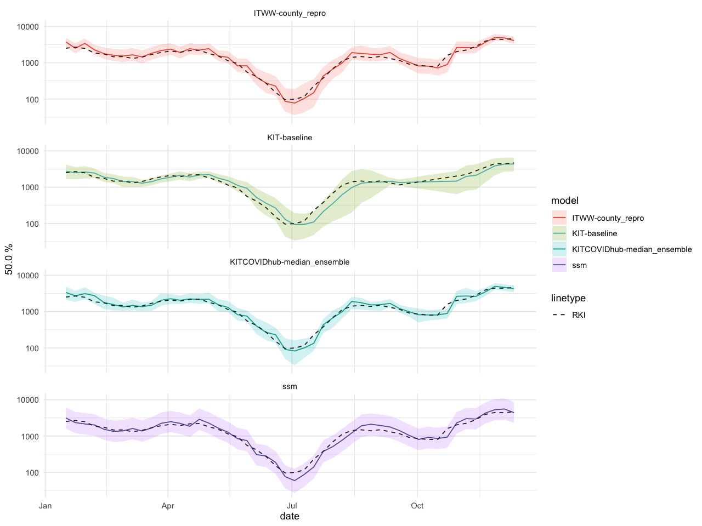
rho_bar <- showcase_results %>%
filter(variable == "log_rho") %>%
transmute(date, rho_bar = exp(`50.0 %`))p_regional_GL <- showcase_results %>%
filter(str_starts(variable, "log_rho_")) %>%
inner_join(ags_county_dict) %>%
left_join(emp_rho_plt) %>%
transmute(ssm_rho = exp(`50.0 %`), min_ssm_rho = exp(`2.5 %`), max_ssm_rho = exp(`97.5 %`),date, name, ags, cases, emp_rho=rho) %>%
filter(ags %in% guetersloh_neighbor_ags) %>%
select(-ags) %>%
pivot_longer(cols = c(emp_rho, ssm_rho), names_to = "type", values_to = "value") %>%
mutate(type = ifelse(type == "emp_rho", "$\\rho^{emp}_{t,r}$", "$\\rho_{t,r}$")) %>%
ggplot(aes(date)) +
geom_line(aes(y=rho_bar, color="$\\bar\\rho$"), data=rho_bar, linetype= 2) +
geom_ribbon(aes(ymin=min_ssm_rho, ymax=max_ssm_rho, fill = "$\\rho_{t,r}$"), alpha=0.1) +
geom_line(aes(y=value, color=type)) +
#geom_line(aes(y=value)) +
facet_wrap(~name, nrow =4) +
scale_y_log10() +
labs(color="", x="", y="$\\rho$") +
scale_color_manual(values= c("$\\bar\\rho$" = 'black', "$\\rho_{t,r}$" = pal_npg("nrc")(10)[3], "$\\rho^{emp}_{t,r}$" = pal_npg("nrc")(10)[5])) +
scale_fill_manual(values=c("$\\rho_{t,r}$" = pal_npg("nrc")(10)[3])) +
scale_x_four_weekly(week_start = 6) +
guides(fill="none") +
# rotate x axis labels
theme(
axis.text.x = element_text(angle=90, vjust=0.5, size = 6)
)
p_regional_GL
ggsave_tikz(here("tikz/regional_showcase_guetersloh.tex"), width=10, height=7)Joining with `by = join_by(c)` Joining with `by = join_by(date, ags)` Warning message in scale_y_log10(): “log-10 transformation introduced infinite values.” Warning message: “Removed 1 row containing missing values or values outside the scale range (`geom_line()`).” Warning message in scale_y_log10(): “log-10 transformation introduced infinite values.” Warning message: “Removed 1 row containing missing values or values outside the scale range (`geom_line()`).” Warning message in (function (texString, cex = 1, face = 1, engine = getOption("tikzDefaultEngine"), : “Attempting to calculate the width of a Unicode stringusing the pdftex engine. This may fail! See the Unicodesection of ?tikzDevice for more information.” Warning message in (function (texString, cex = 1, face = 1, engine = getOption("tikzDefaultEngine"), : “Attempting to calculate the width of a Unicode stringusing the pdftex engine. This may fail! See the Unicodesection of ?tikzDevice for more information.” Warning message in (function (texString, cex = 1, face = 1, engine = getOption("tikzDefaultEngine"), : “Attempting to calculate the width of a Unicode stringusing the pdftex engine. This may fail! See the Unicodesection of ?tikzDevice for more information.” Warning message in (function (texString, cex = 1, face = 1, engine = getOption("tikzDefaultEngine"), : “Attempting to calculate the width of a Unicode stringusing the pdftex engine. This may fail! See the Unicodesection of ?tikzDevice for more information.” Warning message in (function (texString, cex = 1, face = 1, engine = getOption("tikzDefaultEngine"), : “Attempting to calculate the width of a Unicode stringusing the pdftex engine. This may fail! See the Unicodesection of ?tikzDevice for more information.” Warning message in (function (texString, cex = 1, face = 1, engine = getOption("tikzDefaultEngine"), : “Attempting to calculate the width of a Unicode stringusing the pdftex engine. This may fail! See the Unicodesection of ?tikzDevice for more information.” Warning message in (function (texString, cex = 1, face = 1, engine = getOption("tikzDefaultEngine"), : “Attempting to calculate the width of a Unicode stringusing the pdftex engine. This may fail! See the Unicodesection of ?tikzDevice for more information.” Warning message in (function (texString, cex = 1, face = 1, engine = getOption("tikzDefaultEngine"), : “Attempting to calculate the width of a Unicode stringusing the pdftex engine. This may fail! See the Unicodesection of ?tikzDevice for more information.” Warning message in (function (texString, cex = 1, face = 1, engine = getOption("tikzDefaultEngine"), : “Attempting to calculate the width of a Unicode stringusing the pdftex engine. This may fail! See the Unicodesection of ?tikzDevice for more information.” Warning message in (function (texString, cex = 1, face = 1, engine = getOption("tikzDefaultEngine"), : “Attempting to calculate the width of a Unicode stringusing the pdftex engine. This may fail! See the Unicodesection of ?tikzDevice for more information.” Warning message in (function (texString, cex = 1, face = 1, engine = getOption("tikzDefaultEngine"), : “Attempting to calculate the width of a Unicode stringusing the pdftex engine. This may fail! See the Unicodesection of ?tikzDevice for more information.” Warning message in (function (texString, cex = 1, face = 1, engine = getOption("tikzDefaultEngine"), : “Attempting to calculate the width of a Unicode stringusing the pdftex engine. This may fail! See the Unicodesection of ?tikzDevice for more information.” Warning message in (function (texString, cex = 1, face = 1, engine = getOption("tikzDefaultEngine"), : “Attempting to calculate the width of a Unicode stringusing the pdftex engine. This may fail! See the Unicodesection of ?tikzDevice for more information.” Warning message in (function (texString, cex = 1, face = 1, engine = getOption("tikzDefaultEngine"), : “Attempting to calculate the width of a Unicode stringusing the pdftex engine. This may fail! See the Unicodesection of ?tikzDevice for more information.” Warning message in (function (texString, cex = 1, face = 1, engine = getOption("tikzDefaultEngine"), : “Attempting to calculate the width of a Unicode stringusing the pdftex engine. This may fail! See the Unicodesection of ?tikzDevice for more information.” Warning message in (function (texString, cex = 1, face = 1, engine = getOption("tikzDefaultEngine"), : “Attempting to calculate the width of a Unicode stringusing the pdftex engine. This may fail! See the Unicodesection of ?tikzDevice for more information.” Warning message in (function (texString, cex = 1, face = 1, engine = getOption("tikzDefaultEngine"), : “Attempting to calculate the width of a Unicode stringusing the pdftex engine. This may fail! See the Unicodesection of ?tikzDevice for more information.” Warning message in (function (texString, cex = 1, face = 1, engine = getOption("tikzDefaultEngine"), : “Attempting to calculate the width of a Unicode stringusing the pdftex engine. This may fail! See the Unicodesection of ?tikzDevice for more information.” Warning message in (function (texString, cex = 1, face = 1, engine = getOption("tikzDefaultEngine"), : “Attempting to calculate the width of a Unicode stringusing the pdftex engine. This may fail! See the Unicodesection of ?tikzDevice for more information.” Warning message in (function (texString, cex = 1, face = 1, engine = getOption("tikzDefaultEngine"), : “Attempting to calculate the width of a Unicode stringusing the pdftex engine. This may fail! See the Unicodesection of ?tikzDevice for more information.”
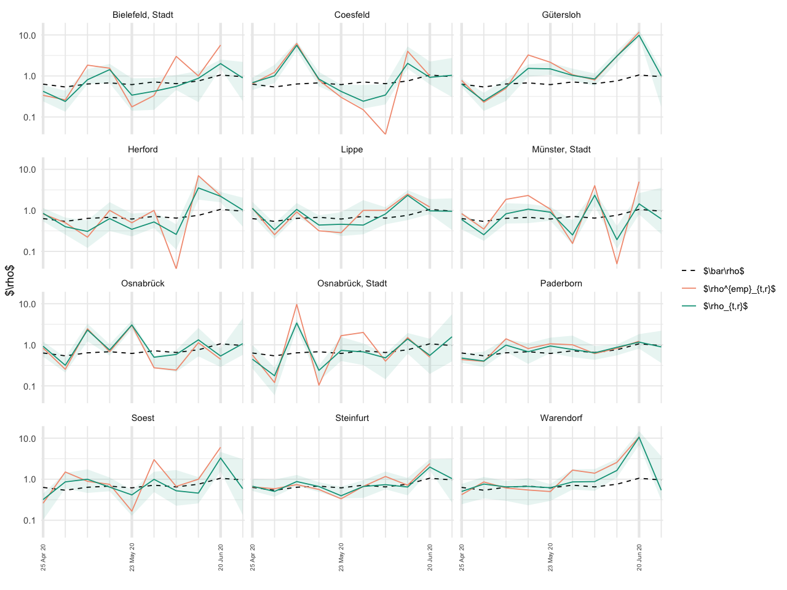
library(sf)
library(ffm)
counties <- bkg_admin(level = "krs")%>%filter(ags%in%guetersloh_neighbor_ags)P_long_states %>%
inner_join(ags_county_dict, by=c("i"="c")) %>%
inner_join(ags_county_dict, by=c("j"="c"), suffix=c("_i", "_j")) %>%
filter(ags_i == "05754") %>%
mutate(direct_neighbor = ags_j %in% guetersloh_neighbor_ags) %>%
select(direct_neighbor, value, ags_j) %>%
{print(arrange(., desc(value)));.} %>%
group_by(direct_neighbor) %>%
summarize(total_p = sum(value)) direct_neighbor value ags_j
1 TRUE 0.8323799014 05754
2 TRUE 0.0476156742 05711
3 TRUE 0.0127954007 05570
4 TRUE 0.0094917059 05774
5 TRUE 0.0083346956 03459
6 TRUE 0.0046365654 05766
7 TRUE 0.0044644482 05974
8 TRUE 0.0036970922 05758
9 FALSE 0.0029847181 15084
10 TRUE 0.0024731474 05515
11 TRUE 0.0016603715 03404
12 FALSE 0.0013806810 05770
13 FALSE 0.0011129431 05978
14 FALSE 0.0010770853 05913
15 FALSE 0.0010603517 11000
16 FALSE 0.0009958077 02000
17 FALSE 0.0009862457 03241
18 FALSE 0.0009384353 05111
19 FALSE 0.0009312638 05315
20 FALSE 0.0008236905 05915
21 TRUE 0.0007448034 05566
22 FALSE 0.0006922121 09461
23 FALSE 0.0006181060 09162
24 FALSE 0.0005583431 06412
25 FALSE 0.0005272664 05113
26 FALSE 0.0004244741 05958
27 FALSE 0.0003933974 05158
28 FALSE 0.0003766638 05554
29 FALSE 0.0003671017 05762
30 FALSE 0.0003599302 05358
31 FALSE 0.0003384155 04011
32 TRUE 0.0003216819 05558
33 FALSE 0.0003169009 05562
34 FALSE 0.0003025577 01002
35 FALSE 0.0002977767 03257
36 FALSE 0.0002882146 05314
37 FALSE 0.0002882146 09184
38 FALSE 0.0002858241 05911
39 FALSE 0.0002834336 05112
40 FALSE 0.0002762621 05374
41 FALSE 0.0002667000 05954
42 FALSE 0.0002643095 03454
43 FALSE 0.0002643095 09564
44 FALSE 0.0002571379 01003
45 FALSE 0.0002547474 05962
46 FALSE 0.0002499664 03453
47 FALSE 0.0002499664 08111
48 FALSE 0.0002475759 01062
49 FALSE 0.0002475759 05513
50 FALSE 0.0002427948 05334
51 FALSE 0.0002404043 06435
52 FALSE 0.0002404043 08116
53 FALSE 0.0002356233 03252
54 FALSE 0.0002332327 05166
55 FALSE 0.0002260612 06438
56 FALSE 0.0002260612 08118
57 FALSE 0.0002260612 08212
58 FALSE 0.0002260612 08226
59 FALSE 0.0002212802 05124
60 FALSE 0.0002212802 05362
61 FALSE 0.0002212802 06436
62 FALSE 0.0002188896 05114
63 FALSE 0.0002188896 05116
64 FALSE 0.0002188896 06633
65 FALSE 0.0002164991 05162
66 FALSE 0.0002164991 05382
67 FALSE 0.0002141086 06434
68 FALSE 0.0002117181 03460
69 FALSE 0.0002117181 14713
70 FALSE 0.0002093276 05154
71 FALSE 0.0002045465 05119
72 FALSE 0.0002045465 05970
73 FALSE 0.0002021560 03403
74 FALSE 0.0002021560 05370
75 FALSE 0.0002021560 05914
76 FALSE 0.0002021560 08215
77 FALSE 0.0001997655 08222
78 FALSE 0.0001925940 03159
79 FALSE 0.0001925940 05512
80 FALSE 0.0001925940 06414
81 FALSE 0.0001902034 03256
82 FALSE 0.0001902034 05170
83 FALSE 0.0001902034 08125
84 FALSE 0.0001878129 03251
85 FALSE 0.0001878129 05117
86 FALSE 0.0001854224 03456
87 FALSE 0.0001854224 07315
88 FALSE 0.0001854224 08126
89 FALSE 0.0001830319 03101
90 FALSE 0.0001830319 12066
91 FALSE 0.0001806414 06611
92 FALSE 0.0001806414 08115
93 FALSE 0.0001806414 08317
94 FALSE 0.0001806414 09562
95 FALSE 0.0001782509 10041
96 FALSE 0.0001758603 01059
97 FALSE 0.0001758603 08136
98 FALSE 0.0001758603 09178
99 FALSE 0.0001758603 12069
100 FALSE 0.0001734698 03358
101 FALSE 0.0001734698 05916
102 FALSE 0.0001734698 06432
103 FALSE 0.0001734698 06531
104 FALSE 0.0001734698 08119
105 FALSE 0.0001710793 07314
106 FALSE 0.0001686888 03353
107 FALSE 0.0001686888 05378
108 FALSE 0.0001686888 06431
109 FALSE 0.0001686888 13075
110 FALSE 0.0001662983 01053
111 FALSE 0.0001662983 01056
112 FALSE 0.0001662983 03254
113 FALSE 0.0001662983 05966
114 FALSE 0.0001662983 06631
115 FALSE 0.0001639078 01060
116 FALSE 0.0001639078 03357
117 FALSE 0.0001639078 05120
118 FALSE 0.0001615172 03103
119 FALSE 0.0001615172 03458
120 FALSE 0.0001615172 06635
121 FALSE 0.0001615172 08421
122 FALSE 0.0001591267 01054
123 FALSE 0.0001591267 06411
124 FALSE 0.0001591267 06634
125 FALSE 0.0001591267 07338
126 FALSE 0.0001591267 09663
127 FALSE 0.0001591267 12063
128 FALSE 0.0001591267 14523
129 FALSE 0.0001591267 14612
130 FALSE 0.0001567362 03359
131 FALSE 0.0001567362 03361
132 FALSE 0.0001567362 03455
133 FALSE 0.0001567362 06440
134 FALSE 0.0001567362 07111
135 FALSE 0.0001567362 07339
136 FALSE 0.0001567362 08315
137 FALSE 0.0001567362 16051
138 FALSE 0.0001543457 03451
139 FALSE 0.0001543457 06433
140 FALSE 0.0001543457 08335
141 FALSE 0.0001543457 08426
142 FALSE 0.0001543457 08436
143 FALSE 0.0001543457 09772
144 FALSE 0.0001543457 12054
145 FALSE 0.0001543457 14511
146 FALSE 0.0001519552 03457
147 FALSE 0.0001519552 07143
148 FALSE 0.0001519552 08127
149 FALSE 0.0001519552 08211
150 FALSE 0.0001519552 08237
151 FALSE 0.0001519552 08311
152 FALSE 0.0001519552 09187
153 FALSE 0.0001519552 09679
154 FALSE 0.0001519552 09761
155 FALSE 0.0001519552 09779
156 FALSE 0.0001519552 13072
157 FALSE 0.0001519552 13076
158 FALSE 0.0001519552 14524
159 FALSE 0.0001495646 01058
160 FALSE 0.0001495646 03151
161 FALSE 0.0001495646 03351
162 FALSE 0.0001495646 06413
163 FALSE 0.0001495646 06534
164 FALSE 0.0001495646 07137
165 FALSE 0.0001495646 08326
166 FALSE 0.0001495646 09671
167 FALSE 0.0001495646 14626
168 FALSE 0.0001471741 01004
169 FALSE 0.0001471741 03155
170 FALSE 0.0001471741 03352
171 FALSE 0.0001471741 09279
172 FALSE 0.0001471741 12072
173 FALSE 0.0001471741 16067
174 FALSE 0.0001232690 01001
175 FALSE 0.0001232690 01051
176 FALSE 0.0001232690 01055
177 FALSE 0.0001232690 01057
178 FALSE 0.0001232690 01061
179 FALSE 0.0001232690 03102
180 FALSE 0.0001232690 03153
181 FALSE 0.0001232690 03154
182 FALSE 0.0001232690 03157
183 FALSE 0.0001232690 03158
184 FALSE 0.0001232690 03255
185 FALSE 0.0001232690 03354
186 FALSE 0.0001232690 03355
187 FALSE 0.0001232690 03356
188 FALSE 0.0001232690 03360
189 FALSE 0.0001232690 03401
190 FALSE 0.0001232690 03402
191 FALSE 0.0001232690 03405
192 FALSE 0.0001232690 03452
193 FALSE 0.0001232690 03461
194 FALSE 0.0001232690 03462
195 FALSE 0.0001232690 04012
196 FALSE 0.0001232690 05122
197 FALSE 0.0001232690 05316
198 FALSE 0.0001232690 05366
199 FALSE 0.0001232690 06437
200 FALSE 0.0001232690 06439
201 FALSE 0.0001232690 06532
202 FALSE 0.0001232690 06533
203 FALSE 0.0001232690 06535
204 FALSE 0.0001232690 06632
205 FALSE 0.0001232690 06636
206 FALSE 0.0001232690 07131
207 FALSE 0.0001232690 07132
208 FALSE 0.0001232690 07133
209 FALSE 0.0001232690 07134
210 FALSE 0.0001232690 07135
211 FALSE 0.0001232690 07138
212 FALSE 0.0001232690 07140
213 FALSE 0.0001232690 07141
214 FALSE 0.0001232690 07211
215 FALSE 0.0001232690 07231
216 FALSE 0.0001232690 07232
217 FALSE 0.0001232690 07233
218 FALSE 0.0001232690 07235
219 FALSE 0.0001232690 07311
220 FALSE 0.0001232690 07312
221 FALSE 0.0001232690 07313
222 FALSE 0.0001232690 07316
223 FALSE 0.0001232690 07317
224 FALSE 0.0001232690 07318
225 FALSE 0.0001232690 07319
226 FALSE 0.0001232690 07320
227 FALSE 0.0001232690 07331
228 FALSE 0.0001232690 07332
229 FALSE 0.0001232690 07333
230 FALSE 0.0001232690 07334
231 FALSE 0.0001232690 07335
232 FALSE 0.0001232690 07336
233 FALSE 0.0001232690 07337
234 FALSE 0.0001232690 07340
235 FALSE 0.0001232690 08117
236 FALSE 0.0001232690 08121
237 FALSE 0.0001232690 08128
238 FALSE 0.0001232690 08135
239 FALSE 0.0001232690 08216
240 FALSE 0.0001232690 08221
241 FALSE 0.0001232690 08225
242 FALSE 0.0001232690 08231
243 FALSE 0.0001232690 08235
244 FALSE 0.0001232690 08236
245 FALSE 0.0001232690 08316
246 FALSE 0.0001232690 08325
247 FALSE 0.0001232690 08327
248 FALSE 0.0001232690 08336
249 FALSE 0.0001232690 08337
250 FALSE 0.0001232690 08415
251 FALSE 0.0001232690 08416
252 FALSE 0.0001232690 08417
253 FALSE 0.0001232690 08425
254 FALSE 0.0001232690 08435
255 FALSE 0.0001232690 08437
256 FALSE 0.0001232690 09161
257 FALSE 0.0001232690 09163
258 FALSE 0.0001232690 09171
259 FALSE 0.0001232690 09172
260 FALSE 0.0001232690 09173
261 FALSE 0.0001232690 09174
262 FALSE 0.0001232690 09175
263 FALSE 0.0001232690 09176
264 FALSE 0.0001232690 09177
265 FALSE 0.0001232690 09179
266 FALSE 0.0001232690 09180
267 FALSE 0.0001232690 09181
268 FALSE 0.0001232690 09182
269 FALSE 0.0001232690 09183
270 FALSE 0.0001232690 09185
271 FALSE 0.0001232690 09186
272 FALSE 0.0001232690 09188
273 FALSE 0.0001232690 09189
274 FALSE 0.0001232690 09190
275 FALSE 0.0001232690 09261
276 FALSE 0.0001232690 09262
277 FALSE 0.0001232690 09263
278 FALSE 0.0001232690 09271
279 FALSE 0.0001232690 09272
280 FALSE 0.0001232690 09273
281 FALSE 0.0001232690 09274
282 FALSE 0.0001232690 09275
283 FALSE 0.0001232690 09276
284 FALSE 0.0001232690 09277
285 FALSE 0.0001232690 09278
286 FALSE 0.0001232690 09361
287 FALSE 0.0001232690 09362
288 FALSE 0.0001232690 09363
289 FALSE 0.0001232690 09371
290 FALSE 0.0001232690 09372
291 FALSE 0.0001232690 09373
292 FALSE 0.0001232690 09374
293 FALSE 0.0001232690 09375
294 FALSE 0.0001232690 09376
295 FALSE 0.0001232690 09377
296 FALSE 0.0001232690 09462
297 FALSE 0.0001232690 09463
298 FALSE 0.0001232690 09464
299 FALSE 0.0001232690 09471
300 FALSE 0.0001232690 09472
301 FALSE 0.0001232690 09473
302 FALSE 0.0001232690 09474
303 FALSE 0.0001232690 09475
304 FALSE 0.0001232690 09476
305 FALSE 0.0001232690 09477
306 FALSE 0.0001232690 09478
307 FALSE 0.0001232690 09479
308 FALSE 0.0001232690 09561
309 FALSE 0.0001232690 09563
310 FALSE 0.0001232690 09565
311 FALSE 0.0001232690 09571
312 FALSE 0.0001232690 09572
313 FALSE 0.0001232690 09573
314 FALSE 0.0001232690 09574
315 FALSE 0.0001232690 09575
316 FALSE 0.0001232690 09576
317 FALSE 0.0001232690 09577
318 FALSE 0.0001232690 09661
319 FALSE 0.0001232690 09662
320 FALSE 0.0001232690 09672
321 FALSE 0.0001232690 09673
322 FALSE 0.0001232690 09674
323 FALSE 0.0001232690 09675
324 FALSE 0.0001232690 09676
325 FALSE 0.0001232690 09677
326 FALSE 0.0001232690 09678
327 FALSE 0.0001232690 09762
328 FALSE 0.0001232690 09763
329 FALSE 0.0001232690 09764
330 FALSE 0.0001232690 09771
331 FALSE 0.0001232690 09773
332 FALSE 0.0001232690 09774
333 FALSE 0.0001232690 09775
334 FALSE 0.0001232690 09776
335 FALSE 0.0001232690 09777
336 FALSE 0.0001232690 09778
337 FALSE 0.0001232690 09780
338 FALSE 0.0001232690 10042
339 FALSE 0.0001232690 10043
340 FALSE 0.0001232690 10044
341 FALSE 0.0001232690 10045
342 FALSE 0.0001232690 10046
343 FALSE 0.0001232690 12051
344 FALSE 0.0001232690 12052
345 FALSE 0.0001232690 12053
346 FALSE 0.0001232690 12060
347 FALSE 0.0001232690 12061
348 FALSE 0.0001232690 12062
349 FALSE 0.0001232690 12064
350 FALSE 0.0001232690 12065
351 FALSE 0.0001232690 12067
352 FALSE 0.0001232690 12068
353 FALSE 0.0001232690 12070
354 FALSE 0.0001232690 12071
355 FALSE 0.0001232690 12073
356 FALSE 0.0001232690 13003
357 FALSE 0.0001232690 13004
358 FALSE 0.0001232690 13071
359 FALSE 0.0001232690 13073
360 FALSE 0.0001232690 13074
361 FALSE 0.0001232690 14521
362 FALSE 0.0001232690 14522
363 FALSE 0.0001232690 14625
364 FALSE 0.0001232690 14627
365 FALSE 0.0001232690 14628
366 FALSE 0.0001232690 14729
367 FALSE 0.0001232690 14730
368 FALSE 0.0001232690 15001
369 FALSE 0.0001232690 15002
370 FALSE 0.0001232690 15003
371 FALSE 0.0001232690 15081
372 FALSE 0.0001232690 15082
373 FALSE 0.0001232690 15083
374 FALSE 0.0001232690 15085
375 FALSE 0.0001232690 15086
376 FALSE 0.0001232690 15087
377 FALSE 0.0001232690 15088
378 FALSE 0.0001232690 15089
379 FALSE 0.0001232690 15090
380 FALSE 0.0001232690 15091
381 FALSE 0.0001232690 16052
382 FALSE 0.0001232690 16053
383 FALSE 0.0001232690 16054
384 FALSE 0.0001232690 16055
385 FALSE 0.0001232690 16061
386 FALSE 0.0001232690 16062
387 FALSE 0.0001232690 16063
388 FALSE 0.0001232690 16064
389 FALSE 0.0001232690 16065
390 FALSE 0.0001232690 16066
391 FALSE 0.0001232690 16068
392 FALSE 0.0001232690 16069
393 FALSE 0.0001232690 16070
394 FALSE 0.0001232690 16071
395 FALSE 0.0001232690 16072
396 FALSE 0.0001232690 16073
397 FALSE 0.0001232690 16074
398 FALSE 0.0001232690 16075
399 FALSE 0.0001232690 16076
400 FALSE 0.0001232690 16077| direct_neighbor | total_p |
|---|---|
| <lgl> | <dbl> |
| FALSE | 0.07138451 |
| TRUE | 0.92861549 |
P_map <- P_long_states %>%
inner_join(ags_county_dict, by=c("i"="c")) %>%
inner_join(ags_county_dict, by=c("j"="c"), suffix=c("_i", "_j")) %>%
filter(ags_i == "05754") %>%
filter(ags_j %in% guetersloh_neighbor_ags) %>%
select(ags = ags_j, p_ij=value)
P_map| ags | p_ij |
|---|---|
| <chr> | <dbl> |
| 03404 | 0.0016603715 |
| 03459 | 0.0083346956 |
| 05515 | 0.0024731474 |
| 05558 | 0.0003216819 |
| 05566 | 0.0007448034 |
| 05570 | 0.0127954007 |
| 05711 | 0.0476156742 |
| 05754 | 0.8323799014 |
| 05758 | 0.0036970922 |
| 05766 | 0.0046365654 |
| 05774 | 0.0094917059 |
| 05974 | 0.0044644482 |
tikz/regional_showcase_guetersloh.texWarning message in scale_y_log10(): “log-10 transformation introduced infinite values.” Warning message: “Removed 1 row containing missing values or values outside the scale range (`geom_line()`).” Warning message in scale_y_log10(): “log-10 transformation introduced infinite values.” Warning message: “Removed 1 row containing missing values or values outside the scale range (`geom_line()`).” Warning message in (function (texString, cex = 1, face = 1, engine = getOption("tikzDefaultEngine"), : “Attempting to calculate the width of a Unicode stringusing the pdftex engine. This may fail! See the Unicodesection of ?tikzDevice for more information.” Warning message in (function (texString, cex = 1, face = 1, engine = getOption("tikzDefaultEngine"), : “Attempting to calculate the width of a Unicode stringusing the pdftex engine. This may fail! See the Unicodesection of ?tikzDevice for more information.” Warning message in (function (texString, cex = 1, face = 1, engine = getOption("tikzDefaultEngine"), : “Attempting to calculate the width of a Unicode stringusing the pdftex engine. This may fail! See the Unicodesection of ?tikzDevice for more information.” Warning message in (function (texString, cex = 1, face = 1, engine = getOption("tikzDefaultEngine"), : “Attempting to calculate the width of a Unicode stringusing the pdftex engine. This may fail! See the Unicodesection of ?tikzDevice for more information.” Warning message in (function (texString, cex = 1, face = 1, engine = getOption("tikzDefaultEngine"), : “Attempting to calculate the width of a Unicode stringusing the pdftex engine. This may fail! See the Unicodesection of ?tikzDevice for more information.” Warning message in (function (texString, cex = 1, face = 1, engine = getOption("tikzDefaultEngine"), : “Attempting to calculate the width of a Unicode stringusing the pdftex engine. This may fail! See the Unicodesection of ?tikzDevice for more information.” Warning message in (function (texString, cex = 1, face = 1, engine = getOption("tikzDefaultEngine"), : “Attempting to calculate the width of a Unicode stringusing the pdftex engine. This may fail! See the Unicodesection of ?tikzDevice for more information.” Warning message in (function (texString, cex = 1, face = 1, engine = getOption("tikzDefaultEngine"), : “Attempting to calculate the width of a Unicode stringusing the pdftex engine. This may fail! See the Unicodesection of ?tikzDevice for more information.” Warning message in (function (texString, cex = 1, face = 1, engine = getOption("tikzDefaultEngine"), : “Attempting to calculate the width of a Unicode stringusing the pdftex engine. This may fail! See the Unicodesection of ?tikzDevice for more information.” Warning message in (function (texString, cex = 1, face = 1, engine = getOption("tikzDefaultEngine"), : “Attempting to calculate the width of a Unicode stringusing the pdftex engine. This may fail! See the Unicodesection of ?tikzDevice for more information.” Warning message in (function (texString, cex = 1, face = 1, engine = getOption("tikzDefaultEngine"), : “Attempting to calculate the width of a Unicode stringusing the pdftex engine. This may fail! See the Unicodesection of ?tikzDevice for more information.” Warning message in (function (texString, cex = 1, face = 1, engine = getOption("tikzDefaultEngine"), : “Attempting to calculate the width of a Unicode stringusing the pdftex engine. This may fail! See the Unicodesection of ?tikzDevice for more information.” Warning message in (function (texString, cex = 1, face = 1, engine = getOption("tikzDefaultEngine"), : “Attempting to calculate the width of a Unicode stringusing the pdftex engine. This may fail! See the Unicodesection of ?tikzDevice for more information.” Warning message in (function (texString, cex = 1, face = 1, engine = getOption("tikzDefaultEngine"), : “Attempting to calculate the width of a Unicode stringusing the pdftex engine. This may fail! See the Unicodesection of ?tikzDevice for more information.” Warning message in (function (texString, cex = 1, face = 1, engine = getOption("tikzDefaultEngine"), : “Attempting to calculate the width of a Unicode stringusing the pdftex engine. This may fail! See the Unicodesection of ?tikzDevice for more information.” Warning message in (function (texString, cex = 1, face = 1, engine = getOption("tikzDefaultEngine"), : “Attempting to calculate the width of a Unicode stringusing the pdftex engine. This may fail! See the Unicodesection of ?tikzDevice for more information.” Warning message in (function (texString, cex = 1, face = 1, engine = getOption("tikzDefaultEngine"), : “Attempting to calculate the width of a Unicode stringusing the pdftex engine. This may fail! See the Unicodesection of ?tikzDevice for more information.” Warning message in (function (texString, cex = 1, face = 1, engine = getOption("tikzDefaultEngine"), : “Attempting to calculate the width of a Unicode stringusing the pdftex engine. This may fail! See the Unicodesection of ?tikzDevice for more information.” Warning message in (function (texString, cex = 1, face = 1, engine = getOption("tikzDefaultEngine"), : “Attempting to calculate the width of a Unicode stringusing the pdftex engine. This may fail! See the Unicodesection of ?tikzDevice for more information.” Warning message in (function (texString, cex = 1, face = 1, engine = getOption("tikzDefaultEngine"), : “Attempting to calculate the width of a Unicode stringusing the pdftex engine. This may fail! See the Unicodesection of ?tikzDevice for more information.”

(full_truth_county %>%
filter(date == prediction_date) %>%
arrange(ags) %>%
pull(cases))[99]qs <- y_total_dist$percentile[c(-1, -length(y_total_dist$percentile))]
nbinom_regional_wis <- nbinom_county_samples %>%
apply(1, quantile, probs = qs) %>%
rbind(
full_truth_county %>%
filter(date == prediction_date) %>%
arrange(ags) %>%
pull(cases),
.
) %>%
apply(2, function(x) {
actual <- x[1]
quants <- x[-1]
wis_result <- WIS_decompose(qs, quants, actual)
# append coverage indicators for 50% and 95% intervals
q025_idx <- which(qs == 0.025)
q25_idx <- which(qs == 0.25)
q50_idx <- which(qs == 0.5)
q75_idx <- which(qs == 0.75)
q975_idx <- which(qs == 0.975)
coverage_50 <- as.numeric(quants[q25_idx] <= actual & actual <= quants[q75_idx])
coverage_95 <- as.numeric(quants[q025_idx] <= actual & actual <= quants[q975_idx])
mae <- unname(abs(quants[q50_idx] - actual))
c(wis_result, coverage_50 = coverage_50, coverage_95 = coverage_95, mae = mae)
}) %>%
purrr::map_dfr(~tibble::as_tibble_row(.x))
showcase_regional_wis <- showcase_results %>%
filter(str_starts(variable, "y_total_")) %>%
mutate(c = as.numeric(str_extract(variable, "y_total_(\\d+)", group=1))) %>%
inner_join(mutate(ags_county_dict, c=1:400), by = "c") %>%
inner_join(filter(full_truth_county, date == prediction_date), by=c("ags")) %>%
rowwise() %>%
mutate(
wis = list(WIS_decompose(
prob=qs,
quant=c(`1.0 %`, `2.5 %`, `5.0 %`, `10.0 %`, `15.0 %`, `20.0 %`, `25.0 %`, `30.0 %`, `35.0 %`, `40.0 %`, `45.0 %`, `50.0 %`, `55.0 %`, `60.0 %`, `65.0 %`, `70.0 %`, `75.0 %`, `80.0 %`, `85.0 %`, `90.0 %`, `95.0 %`, `97.5 %`, `99.0 %`),
actual= cases
)),
coverage_50 = as.numeric(`25.0 %` <= cases & cases <= `75.0 %`),
coverage_95 = as.numeric(`2.5 %` <= cases & cases <= `97.5 %`),
mae = abs(`50.0 %` - cases)
) %>%
select(name, ags, wis, coverage_50, coverage_95, mae) %>%
unnest_wider(wis)nbinom_regional_wis %>%
cbind(select(showcase_regional_wis, name, ags)) %>%
inner_join(showcase_regional_wis, suffix=c("_nbinom", "_ssm"), by=c("name", "ags")) %>%
pivot_longer(
cols = matches("_(ssm|nbinom)$"),
names_to = c(".value", "model"),
names_pattern = "^(.*)_(ssm|nbinom)$"
) %>%
mutate(coverage_50 = coverage_50 * 100, coverage_95 = coverage_95 * 100) %>%
pivot_longer(cols = c(mae, wis, sharpness, underprediction, overprediction, mean_error, coverage_50, coverage_95), names_to = "metric", values_to = "value") %>%
group_by(model, metric) %>%
summarize(
mean = mean(value)
) %>%
pivot_wider(names_from = model, values_from = mean) %>%
mutate(metric = factor(metric, levels = c("mae", "wis", "sharpness", "underprediction", "overprediction", "mean_error", "coverage_50", "coverage_95"))) %>%
arrange(metric) %>%
mutate(metric = recode(metric, mae = "MAE", wis = "WIS", sharpness = "sharpness", underprediction = "underprediction", overprediction = "overprediction", mean_error = "rescaled MAE", coverage_50 = "coverage 50% PI [%]", coverage_95 = "coverage 95% PI [%]")) %>%
mutate(across(c(ssm, nbinom), format_latex)) %>%
rename(NBinom = nbinom, SSM = ssm) %>%
kable(format="latex", digits=2, booktabs=T, escape=T, align = c("l", "r", "r")) %>%
pack_rows("WIS components", 3, 6) %>%
pack_rows("coverage", 7, 8) %>%
cat(., file=here("tables/performance_regional_ssm_vs_nbinom.tex"))nbinom_intervals <- nbinom_county_samples %>%
apply(1, quantile, probs = y_total_dist$percentile) %>%
melt %>%
rename(q = Var1, c = Var2) %>%
inner_join(ags_county_dict, by=c("c")) %>%
filter(q %in% c('2.5%', '97.5%'), ags %in% guetersloh_neighbor_ags) %>%
mutate(q = ifelse(q == '2.5%', "2.5 %", "97.5 %")) %>%
select(-c) %>%
pivot_wider(names_from = q, values_from = value)
nbinom_intervals| ags | name | 2.5 % | 97.5 % |
|---|---|---|---|
| <chr> | <chr> | <dbl> | <dbl> |
| 03404 | Osnabrück, Stadt | 0 | 4 |
| 03459 | Osnabrück | 0 | 5 |
| 05515 | Münster, Stadt | 8 | 24 |
| 05558 | Coesfeld | 0 | 0 |
| 05566 | Steinfurt | 11 | 52 |
| 05570 | Warendorf | 520 | 639 |
| 05711 | Bielefeld, Stadt | 37 | 66 |
| 05754 | Gütersloh | 1096 | 4666 |
| 05758 | Herford | 11 | 74 |
| 05766 | Lippe | 2 | 13 |
| 05774 | Paderborn | 7 | 21 |
| 05974 | Soest | 6 | 91 |
shp <- '|'
sz <- 3
nudge_x <- .1
regional_predictions <- showcase_results %>%
filter(str_starts(variable, "y_total_")) %>%
mutate(c = as.numeric(str_extract(variable, "y_total_(\\d+)", group=1))) %>%
inner_join(mutate(ags_county_dict, c=1:400), by = "c") %>%
filter(date == max(date)) %>%
inner_join(full_truth_county, by=c("ags", "date")) %>%
inner_join(
emp_rho_plt %>%
filter(date == max(showcase_results$date) - 7) %>%
select(ags, emp_rho = rho),
by = "ags"
) %>%
inner_join(
full_truth_county %>%
filter(date == max(showcase_results$date) - 7) %>%
select(ags, cases_prev = cases),
by = "ags"
) %>%
mutate(emp_pred = emp_rho * cases_prev)
regional_predictions %>%
filter(ags %in% guetersloh_neighbor_ags) %>%
ggplot(aes(name)) +
geom_point(aes(y=cases, color="$I_{T, r}$"), size=sz, shape=shp) +
geom_errorbar(aes(ymin = `2.5 %`, ymax = `97.5 %`, color="$I^{nbinom}_{T, r}$"), data=nbinom_intervals, width=.1, position=position_nudge(x=nudge_x)) +
geom_errorbar(aes(ymin = `2.5 %`, ymax = `97.5 %`, color="$I^{ssm}_{T, r}$"), width=.1, position=position_nudge(x=-nudge_x)) +
labs(x="", y="(predicted) cases", color="") +
theme(axis.text.x = element_text(angle=90, hjust=1)) +
scale_color_manual(values=c("$I_{T, r}$" = 'black', "$I^{nbinom}_{T, r}$" = pal_npg("nrc")(10)[2], "$I^{ssm}_{T, r}$" = pal_npg("nrc")(10)[4])) +
coord_flip() +
scale_x_discrete(limits= rev) +
scale_y_log10()
ggsave_tikz(here("tikz/regional_predictions_GL.tex"), width=8, height=3)Warning message in scale_y_log10(): “log-10 transformation introduced infinite values.” Warning message in scale_y_log10(): “log-10 transformation introduced infinite values.” Warning message in scale_y_log10(): “log-10 transformation introduced infinite values.” Warning message in scale_y_log10(): “log-10 transformation introduced infinite values.” Warning message in scale_y_log10(): “log-10 transformation introduced infinite values.” Warning message in scale_y_log10(): “log-10 transformation introduced infinite values.” Warning message in scale_y_log10(): “log-10 transformation introduced infinite values.” Warning message in scale_y_log10(): “log-10 transformation introduced infinite values.” Warning message in (function (texString, cex = 1, face = 1, engine = getOption("tikzDefaultEngine"), : “Attempting to calculate the width of a Unicode stringusing the pdftex engine. This may fail! See the Unicodesection of ?tikzDevice for more information.” Warning message in (function (texString, cex = 1, face = 1, engine = getOption("tikzDefaultEngine"), : “Attempting to calculate the width of a Unicode stringusing the pdftex engine. This may fail! See the Unicodesection of ?tikzDevice for more information.” Warning message in (function (texString, cex = 1, face = 1, engine = getOption("tikzDefaultEngine"), : “Attempting to calculate the width of a Unicode stringusing the pdftex engine. This may fail! See the Unicodesection of ?tikzDevice for more information.” Warning message in (function (texString, cex = 1, face = 1, engine = getOption("tikzDefaultEngine"), : “Attempting to calculate the width of a Unicode stringusing the pdftex engine. This may fail! See the Unicodesection of ?tikzDevice for more information.” Warning message in (function (texString, cex = 1, face = 1, engine = getOption("tikzDefaultEngine"), : “Attempting to calculate the width of a Unicode stringusing the pdftex engine. This may fail! See the Unicodesection of ?tikzDevice for more information.” Warning message in (function (texString, cex = 1, face = 1, engine = getOption("tikzDefaultEngine"), : “Attempting to calculate the width of a Unicode stringusing the pdftex engine. This may fail! See the Unicodesection of ?tikzDevice for more information.” Warning message in (function (texString, cex = 1, face = 1, engine = getOption("tikzDefaultEngine"), : “Attempting to calculate the width of a Unicode stringusing the pdftex engine. This may fail! See the Unicodesection of ?tikzDevice for more information.” Warning message in (function (texString, cex = 1, face = 1, engine = getOption("tikzDefaultEngine"), : “Attempting to calculate the width of a Unicode stringusing the pdftex engine. This may fail! See the Unicodesection of ?tikzDevice for more information.”
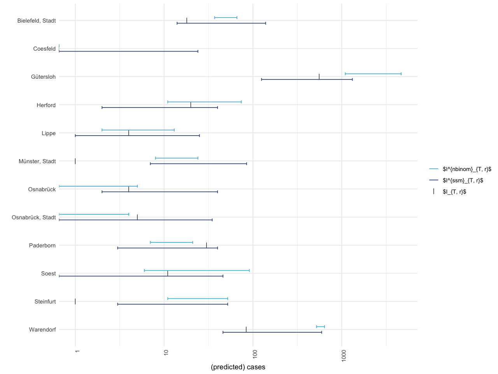
full_truth_county %>%
filter(date == prediction_date - 7, ags %in% guetersloh_neighbor_ags) %>%
inner_join(ags_county_dict) %>%
select(name, cases)Joining with `by = join_by(ags)`
| name | cases |
|---|---|
| <chr> | <dbl> |
| Osnabrück, Stadt | 3 |
| Osnabrück | 4 |
| Münster, Stadt | 5 |
| Coesfeld | 4 |
| Steinfurt | 12 |
| Warendorf | 193 |
| Bielefeld, Stadt | 17 |
| Gütersloh | 856 |
| Herford | 16 |
| Lippe | 6 |
| Paderborn | 11 |
| Soest | 12 |
n_neigbhors = length(guetersloh_neighbor_ags)
read_csv(here("data/results/4_local_outbreak_model/guetersloh_distribution_cases.csv")) %>%
mutate(ags_i = rep(sort(guetersloh_neighbor_ags), each = n_neigbhors), ags_j = rep(sort(guetersloh_neighbor_ags), times = n_neigbhors)) %>%
inner_join(ags_county_dict %>% select(ags, name), by=c("ags_j"="ags")) %>%
inner_join(ags_county_dict %>% select(ags, name), by=c("ags_i"="ags"), suffix=c("_i", "_j")) %>%
ggplot(aes(county_shorthand(name_i), name_j)) +
geom_tile(aes(fill=pmax(`50.0 %`, 1))) +
geom_text(aes(label=paste0(round(`50.0 %`, 0), "\n(", round(`2.5 %`, 0), " - ", round(`97.5 %`, 0), ')')), size=2.5) +
scale_fill_gradient(low = "white", high = pal_npg("nrc")(10)[3], trans="log10") +
# reverse y axis
scale_y_discrete(limits=rev) +
labs(x="region of primary case $r$", y="region of secondary case $r'$", fill="$I_{T, r \\to r'}$") +
theme(
axis.text.x = element_text(angle=90, hjust=1)
) +
coord_fixed()
ggsave_tikz(here("tikz/guetersloh_neighbors_cases.tex"), width=10, height=10)Warning message in (function (texString, cex = 1, face = 1, engine = getOption("tikzDefaultEngine"), :
“Attempting to calculate the width of a Unicode stringusing the pdftex engine. This may fail! See the Unicodesection of ?tikzDevice for more information.”
Warning message in (function (texString, cex = 1, face = 1, engine = getOption("tikzDefaultEngine"), :
“Attempting to calculate the width of a Unicode stringusing the pdftex engine. This may fail! See the Unicodesection of ?tikzDevice for more information.”
Warning message in (function (texString, cex = 1, face = 1, engine = getOption("tikzDefaultEngine"), :
“Attempting to calculate the width of a Unicode stringusing the pdftex engine. This may fail! See the Unicodesection of ?tikzDevice for more information.”
Warning message in (function (texString, cex = 1, face = 1, engine = getOption("tikzDefaultEngine"), :
“Attempting to calculate the width of a Unicode stringusing the pdftex engine. This may fail! See the Unicodesection of ?tikzDevice for more information.”
Warning message in (function (texString, cex = 1, face = 1, engine = getOption("tikzDefaultEngine"), :
“Attempting to calculate the width of a Unicode stringusing the pdftex engine. This may fail! See the Unicodesection of ?tikzDevice for more information.”
Warning message in (function (texString, cex = 1, face = 1, engine = getOption("tikzDefaultEngine"), :
“Attempting to calculate the width of a Unicode stringusing the pdftex engine. This may fail! See the Unicodesection of ?tikzDevice for more information.”
Warning message in (function (texString, cex = 1, face = 1, engine = getOption("tikzDefaultEngine"), :
“Attempting to calculate the width of a Unicode stringusing the pdftex engine. This may fail! See the Unicodesection of ?tikzDevice for more information.”
Warning message in (function (texString, cex = 1, face = 1, engine = getOption("tikzDefaultEngine"), :
“Attempting to calculate the width of a Unicode stringusing the pdftex engine. This may fail! See the Unicodesection of ?tikzDevice for more information.”
Warning message in (function (texString, cex = 1, face = 1, engine = getOption("tikzDefaultEngine"), :
“Attempting to calculate the width of a Unicode stringusing the pdftex engine. This may fail! See the Unicodesection of ?tikzDevice for more information.”
Warning message in (function (texString, cex = 1, face = 1, engine = getOption("tikzDefaultEngine"), :
“Attempting to calculate the width of a Unicode stringusing the pdftex engine. This may fail! See the Unicodesection of ?tikzDevice for more information.”
Warning message in (function (texString, cex = 1, face = 1, engine = getOption("tikzDefaultEngine"), :
“Attempting to calculate the width of a Unicode stringusing the pdftex engine. This may fail! See the Unicodesection of ?tikzDevice for more information.”
Warning message in (function (texString, cex = 1, face = 1, engine = getOption("tikzDefaultEngine"), :
“Attempting to calculate the width of a Unicode stringusing the pdftex engine. This may fail! See the Unicodesection of ?tikzDevice for more information.”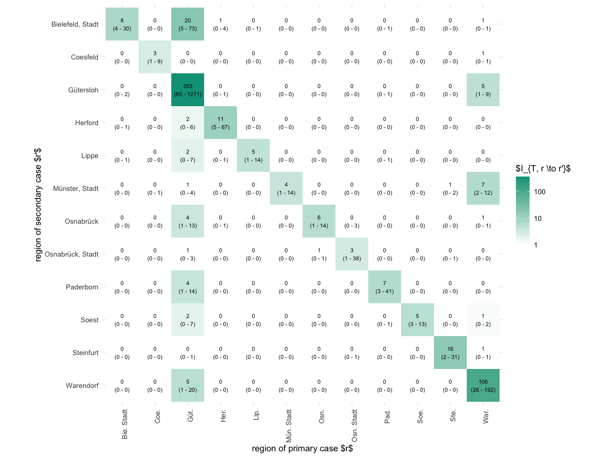